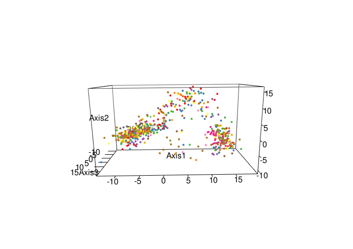
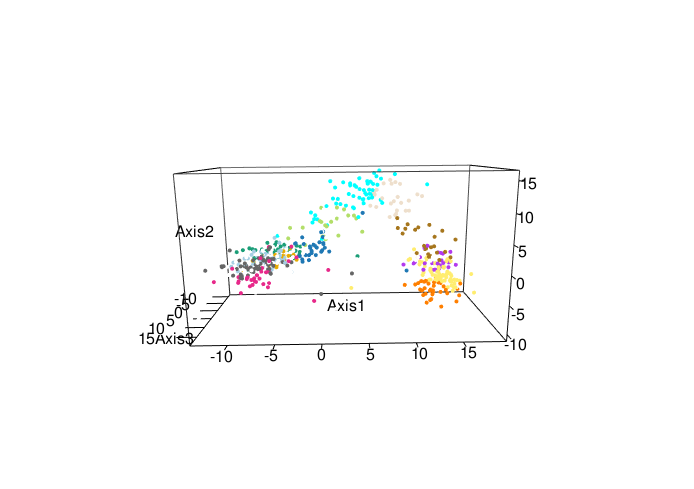
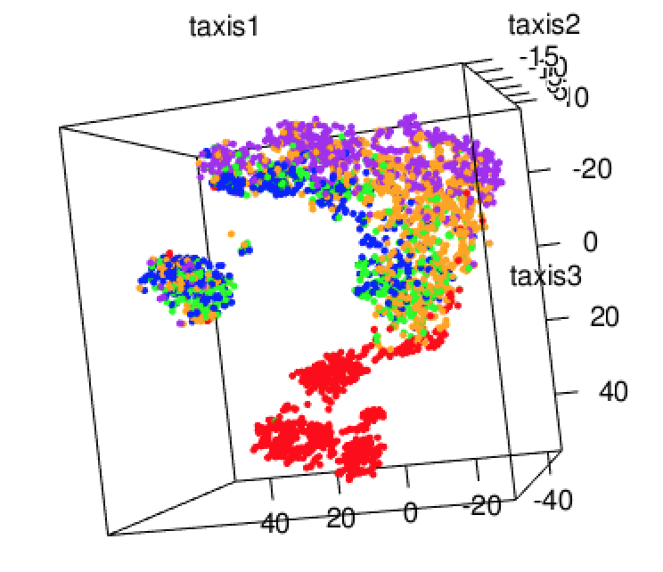
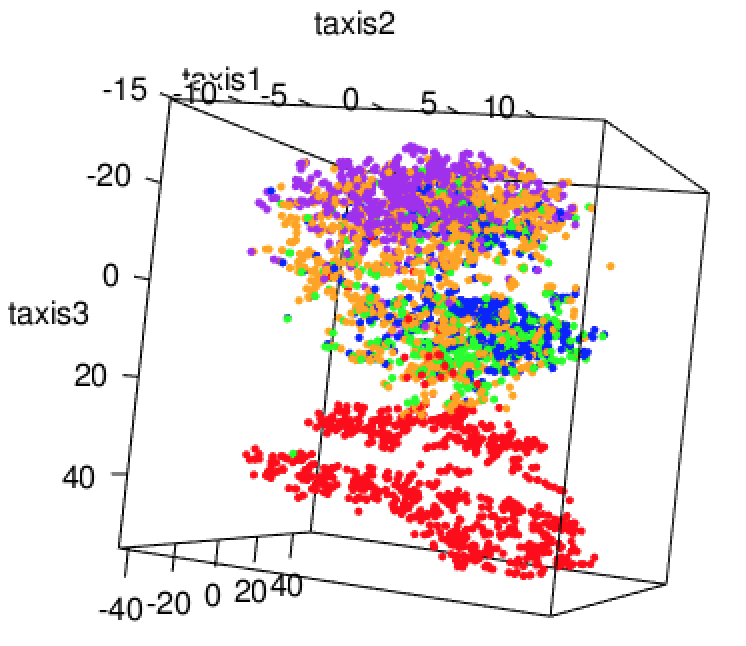
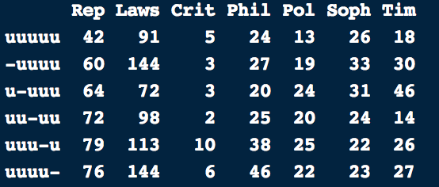

11 9.2 다차원 척도법과 서열화 (Ordination)

실제 상황에는 종종 포인트 클라우드, 그래디언트, 그래프, 어트랙션 포인트, 노이즈 및 서로 다른 공간적 환경이 포함되는데, 이는 마치 단단한 뼈대, 파도, 태양, 그리고 찌르레기들이 있는 이 사진과도 비슷합니다.
7장에서 우리는 열이 연속형 변수인 직사각형 행렬을 요약하는 방법을 보았습니다. 우리가 만들었던 지도들은 모든 열이 의미 있는 분산을 가질 때 행렬 (X)에서 가장 중요한 신호(signal) 성분을 분리해 내는 것을 목표로 하는 주성분 분석과 같은 비지도 차원 축소 기법들을 사용했습니다.
여기서 우리는 이러한 아이디어들을 연속형 변수와 범주형 변수가 결합된 더 복잡한 불균질 데이터로 확장합니다. 실제로 때때로 우리의 관측치는 개별 변수나 좌표 세트로 쉽게 설명될 수 없지만, 그들 사이의 거리나 (비)유사성을 결정하거나, 또는 그래프나 트리를 사용하여 그들 사이의 관계를 설명하는 것이 가능합니다. 예로는 종 계통수에서의 종이나 생물학적 서열이 있습니다. 생물학 이외의 예로는 텍스트 문서나 영화 파일이 있는데, 여기서 우리는 그것들 사이의 (비)유사성을 결정하는 합리적인 방법을 가질 수는 있지만 명백한 변수나 좌표는 없습니다.
이 장에는 더 고급 기법들이 포함되어 있으며, 이를 위해 종종 기술적인 세부 사항은 생략합니다. 여기까지 온 만큼, 예제를 통한 실습 경험과 광범위한 참고 문헌을 제공하여 여러분이 비선형 다변량 분석에서 더 ’최첨단’인 기법 중 일부를 이해하고 사용할 수 있기를 바랍니다.
이 장에서 우리는 다음을 수행할 것입니다:
관측치 간의 거리를 사용할 수 있는 경우로 선형 차원 축소 방법을 확장합니다. 이를 다차원 척도법(multidimensional scaling, MDS) 또는 주좌표 분석(principal coordinates analysis)이라고 합니다.
비선형적이고 이상치에 강건한 MDS의 변형들을 찾아봅니다.
범주형 데이터와 연속형 데이터의 조합뿐만 아니라 소위 ‘보조(supplementary)’ 정보도 인코딩합니다. 이를 통해 배치 효과(batch effects) 를 다룰 수 있음을 보게 될 것입니다.
카이제곱 거리와 대응 분석(correspondence analysis, CA) 을 사용하여 범주형 데이터(분할표)에 주목할 만한 의존성이 포함된 위치를 확인합니다.
범주형이 아닌 잠재 변수들을 밝혀낼 수 있는 군집화 방법을 일반화합니다. 이를 통해 우리 데이터에서 그래디언트, “의사 시간(pseudotime)” 및 숨겨진 비선형 효과를 감지할 수 있습니다.
분산과 공분산의 개념을 여러 다른 데이터 도메인의 데이터 표 연구로 일반화합니다.
때때로 데이터는 특징 공간의 점으로 표현되지 않습니다. 이는 약물, 이미지, 트리 또는 다른 복잡한 객체 사이의 (비)유사성 행렬이 제공될 때 발생할 수 있는데, 이들은 ({R}^n) 상의 명백한 좌표를 가지고 있지 않습니다.
5장에서 우리는 거리로부터 클러스터 를 생성하는 방법을 보았습니다. 여기서 우리의 목표는 PCA의 처음 몇몇 주축으로 만든 것과 유사하게, 저차원 공간(예: 평면)의 맵에 데이터를 시각화하는 것입니다.
우리는 지리 데이터를 사용하는 직관적인 예제로 시작합니다. 그림 9.1에는 우크라이나의 도시와 장소들 사이의 거리에 대한 히트맵과 군집화가 나와 있습니다1.
1 이 데이터의 출처는 data 폴더의 ukraine-dists.R 스크립트에 설명되어 있습니다.
library("pheatmap")
data("ukraine_dists", package = "MSMB")
as.matrix(ukraine_dists)[1:4, 1:4]__
Kyiv Odesa Sevastopol Chernihiv
Kyiv 0.0000 441.2548 687.7551 128.1287
Odesa 441.2548 0.0000 301.7482 558.6483
Sevastopol 687.7551 301.7482 0.0000 783.6561
Chernihiv 128.1287 558.6483 783.6561 0.0000
pheatmap(as.matrix(ukraine_dists),
color = colorRampPalette(c("#0057b7", "#ffd700"))(50),
breaks = seq(0, max(ukraine_dists)^(1/2), length.out = 51)^2,
treeheight_row = 10, treeheight_col = 10)__{kind=link}
그림 9.1: ukraine_dists 거리 행렬의 히트맵. 거리는 킬로미터 단위로 측정됩니다. 함수가 도시들의 순서를 재배열하고 가장 가까운 것들을 그룹화했습니다.
쌍별 거리를 포함하는 ukraine_dists 외에도, 위에서 로드한 RData 파일에는 경도와 위도가 포함된 ukraine_coords 데이터 프레임도 포함되어 있습니다; 우리는 이를 나중에 실측 자료(ground truth)로 사용할 것입니다. 거리가 주어지면 다차원 척도법(MDS)은 그들의 상대적 위치에 대한 “지도”를 제공합니다. 도시들이 2D 평면상에서 갖는 유클리드 거리가 주어진 거리 행렬을 정확하게 재현하도록 배치하는 것은 불가능할 것입니다: 도시들은 평면이 아니라 지구의 곡면 위에 있기 때문입니다. 그럼에도 불구하고, 우리는 데이터를 잘 표현하는 2차원 임베딩을 찾을 수 있을 것으로 기대할 수 있습니다. 생물학적 데이터의 경우, 우리의 2차원 임베딩은 이보다 훨씬 더 모호할 가능성이 높습니다. 우리는 다음 함수를 호출합니다:
ukraine_mds = cmdscale(ukraine_dists, eig = TRUE)__이 장에서 여러 번 재사용하여 cmdscale 함수의 호출 결과로부터 스크리 플롯(screeplot)을 만드는 함수를 정의합니다:
library("dplyr")
library("ggplot2")
plotscree = function(x, m = length(x$eig)) {
ggplot(tibble(eig = x$eig[seq_len(m)], k = seq(along = eig)),
aes(x = k, y = eig)) + theme_minimal() +
scale_x_discrete("k", limits = as.factor(seq_len(m))) +
geom_bar(stat = "identity", width = 0.5, fill = "#ffd700", col = "#0057b7")
}__
plotscree(ukraine_mds, m = 4)__{kind=link}
그림 9.2: 처음 네 개의 고윳값에 대한 스크리 플롯. 처음 두 개의 고윳값 이후에 뚜렷한 감소가 있으며, 이는 데이터가 2차원 임베딩으로 잘 설명됨을 나타냅니다.
__
질문 9.1
cmdscale 함수에 의해 출력된 모든 고윳값들을 살펴보세요: 무엇을 발견했나요?
__
해결책
__
다음을 실행하면:
ukraine_mds$eig |> signif(3)__
[1] 3.91e+06 1.08e+06 3.42e+02 4.84e-01 2.13e-01 3.83e-05 5.90e-06
[8] 5.82e-07 8.79e-08 4.94e-08 6.52e-10 2.84e-10 1.84e-10 5.22e-11
[15] 4.89e-11 4.57e-11 -3.26e-12 -2.55e-11 -5.90e-11 -6.55e-11 -1.40e-10
[22] -1.51e-10 -3.46e-10 -3.76e-10 -4.69e-10 -2.24e-09 -1.51e-08 -9.60e-05
[29] -2.51e-04 -1.41e-02 -1.19e-01 -3.58e+02 -8.85e+02
plotscree(ukraine_mds)__
그림 9.3: 모든 고윳값에 대한 스크리 플롯.
PCA와 달리 일부 음의 고윳값들이 있음을 알 수 있습니다. 이는 cmdscale이 작동하는 방식 때문입니다.
cmdscale 함수의 주요 출력은 2차원 임베딩의 좌표이며, 이를 그림 9.4에 나타냈습니다 (알고리즘의 작동 방식은 다음 섹션에서 논의할 것입니다).
ukraine_mds_df = tibble(
PCo1 = ukraine_mds$points[, 1],
PCo2 = ukraine_mds$points[, 2],
labs = rownames(ukraine_mds$points)
)
library("ggrepel")
g = ggplot(ukraine_mds_df, aes(x = PCo1, y = PCo2, label = labs)) +
geom_point() + geom_text_repel(col = "#0057b7") + coord_fixed()
g __{kind=link}
그림 9.4: 거리 기반의 MDS 지도.
상대적인 위치는 정확하지만 지도의 방향이 관습적이지 않다는 점에 유의하세요: 크림 반도가 상단에 있습니다. 이는 거리로부터 평면 임베딩을 재구성하는 방법들에서 흔히 나타나는 현상입니다. 점들 사이의 거리는 회전과 반사(축 뒤집기)에 대해 불변이기 때문에, 회전이나 반사를 통해 연관되는 어떠한 솔루션도 다른 솔루션만큼 좋습니다. cmdscale과 같은 함수들은 똑같이 최적인 솔루션들 중 하나를 선택할 것이며, 그 구체적인 선택은 데이터의 미세한 세부 사항이나 사용 중인 컴퓨팅 플랫폼에 따라 달라질 수 있습니다. 여기서 우리는 (y)축의 부호를 반전시켜 결과를 더 관습적인 방향으로 변환할 수 있습니다. 그림 9.5에서 지도를 다시 그리고, 이를 ukraine_coords 데이터 프레임의 실제 경도 및 위도와 비교합니다 (그림 9.6).
g %+% mutate(ukraine_mds_df, PCo1 = PCo1, PCo2 = -PCo2)__{kind=link}
그림 9.5: 그림 9.4와 같지만, (y)축이 뒤집힌 모습.
data("ukraine_coords", package = "MSMB")
print.data.frame(ukraine_coords[1:4, c("city", "lat", "lon")])__
city lat lon
1 Kyiv 50.45003 30.52414
2 Odesa 46.48430 30.73229
3 Sevastopol 44.60544 33.52208
4 Chernihiv 51.49410 31.29433
ggplot(ukraine_coords, aes(x = lon, y = lat, label = city)) +
geom_point() + geom_text_repel(col = "#0057b7")__{kind=link}
그림 9.6: ukraine_coords 데이터 프레임에서 가져온 실제 위도와 경도.
__
질문 9.2
우리는 종횡비에 주의를 기울이지 않고 그림 9.6의 오른쪽 패널에 경도와 위도를 그렸습니다. 이 플롯에 적절한 종횡비는 얼마일까요?
__
해결책
__
경도의 1도 변화에 해당하는 거리와 위도의 1도 변화에 해당하는 거리 사이에는 단순한 관계가 없으므로 선택하기가 어렵습니다. 지구가 구형이고 반지름이 6371km라는 단순화된 가정하에서도 복잡합니다: 위도의 1도는 항상 111km 거리((6371/360))에 해당하며, 적도에서의 경도 1도 마찬가지입니다. 하지만 적도에서 멀어지면 경도 1도는 점점 더 짧은 거리에 해당하게 됩니다(극점에서는 거리가 아예 없습니다). 실용적으로 그림 9.6과 같은 디스플레이의 경우, 가장 북쪽 지점과 남쪽 지점의 중간 정도인 48도에 대한 코사인 값을 종횡비로 선택할 수 있습니다.
__
질문 9.3
그림 9.6에 국제 경계와 강 같은 지리적 특징을 추가해 보세요.
__
해결책
__
국제 경계를 다각형으로 추가하는 아래 코드가 시작점이 될 수 있습니다 (그림 9.7).
library("maps")
ua_borders = dplyr::filter(map_data("world"), region == "Ukraine")
ggplot(ukraine_coords, aes(x = lon, y = lat)) +
geom_polygon(data = ua_borders, aes(x = long, y = lat, group = subregion), fill = "#ffd700", color = "#0057b7") +
geom_point() +
geom_text_repel(aes(label = city)) +
coord_fixed(1/cos(48/180*pi))__벡터 및 래스터 데이터 유형을 포함하여 지리 공간 데이터를 위해 R에서 사용할 수 있는 추가 인프라가 많이 있습니다.

그림 9.7: 그림 9.6에 국제 경계가 추가된 모습.
참고: MDS는 PCA와 유사한 출력을 생성하지만, 데이터(샘플 포인트)에 대한 한 종류의 ‘차원’만 가집니다. ’쌍대(dual)’ 차원이 없으며, 바이플롯(biplots)이나 로딩(loading) 벡터가 없다는 점입니다. 이는 지도를 해석할 때 단점이 됩니다. 극단적인 점들과 그들 사이의 차이점들을 주의 깊게 살펴봄으로써 해석을 용이하게 할 수 있습니다.
11.0.1 9.2.1 방법은 어떻게 작동하나요?
좌표가 알려진 점들로부터 실제로 시작했다면 어떤 일이 일어날지 살펴봅시다2. 우리는 이 좌표들을 점의 수만큼의 행을 가진 행렬의 두 열에 넣습니다. 이제 이 좌표들을 바탕으로 점들 사이의 거리를 계산합니다. 좌표 (X)에서 거리로 가려면 다음과 같이 씁니다: [d^2_{i,j} = (x_i^1 - x_j1)2 + + (x_i^p - x_jp)2.] 우리는 제곱 거리 행렬을 R에서 DdotD라고 부르고 텍스트에서는 (DD)라고 부를 것입니다. 우리는 그 거리의 제곱이 관측된 (DD)에 가능한 한 가까운 점들을 찾고 싶습니다.3
이는 (D)와 그 자신과의 행렬 곱인 (DD) 또는 (D^2)과는 다릅니다.
3 여기서는 우리 도시의 경도와 위도를 데카르트 좌표로 사용하고 지구 표면의 곡률을 무시함으로써 약간의 ’남용’을 저지르고 있습니다. 하버사인(Haversine) 공식에 대한 정보를 인터넷에서 찾아보세요.
X = with(ukraine_coords, cbind(lon, lat * cos(48)))
DdotD = as.matrix(dist(X)^2)__상대적인 거리는 데이터의 원점에 의존하지 않습니다. 우리는 (H=I-^t)로 정의된 중앙화 행렬(centering matrix) (H)를 사용하여 데이터를 중앙에 맞춥니다. 다음을 사용하여 (H)의 중앙화 속성을 확인해 봅시다:
n = nrow(X)
H = diag(rep(1,n))-(1/n) * matrix(1, nrow = n, ncol = n)
Xc = sweep(X,2,apply(X,2,mean))
Xc[1:2, ]__
lon
[1,] -1.1722946 -1.184705
[2,] -0.9641429 1.353935
HX = H %*% X
HX[1:2, ]__
lon
[1,] -1.1722946 -1.184705
[2,] -0.9641429 1.353935
apply(HX, 2, mean)__
lon
-1.618057e-15 1.747077e-16 __
질문 9.4
DdotD의 오른쪽과 왼쪽에 모두 중앙화 행렬을 적용하여 얻은 행렬을 B0라고 합시다. (HX) 행렬에 의해 주어지는 원점에 중앙화된 점들을 고려하고 그 교차 곱(cross product)을 계산하여 이를 B2라고 부릅시다. B0를 B2와 같게 만들려면 B0에 무엇을 해야 할까요?
__
해결책
__
B0 = H %*% DdotD %*% H
B2 = HX %*% t(HX)
B2[1:3, 1:3] / B0[1:3, 1:3]__
[,1] [,2] [,3]
[1,] -0.5 -0.5 -0.5
[2,] -0.5 -0.5 -0.5
[3,] -0.5 -0.5 -0.5
max(abs(-0.5 * B0 - B2))__
[1] 9.237056e-14따라서, 행들 사이의 제곱 거리((DD))와 중앙화된 행렬의 교차 곱 (B=(HX)(HX)^t)가 주어졌을 때, 우리는 다음을 보였습니다:
[ - rac{1}{2} H(DD) H=B ]
이는 항상 참이며, 처음에 (DD)가 주어졌을 때 식 9.1을 만족하는 (X)를 역설계하는 데 이를 사용합니다.
11.0.1.1 특잇값 벡터를 사용하여 (DD)에서 (X) 구하기.
식 9.1에서 정의된 (B)의 고유 분해(eigen-decomposition)를 취함으로써 행렬 (DD)에서 (X)로 거꾸로 갈 수 있습니다. 이는 또한 우리가 (X) 행렬에 대해 몇 개의 좌표 또는 열을 원하는지 선택할 수 있게 해줍니다. 이는 PCA가 최선의 계수(rank) (r) 근사를 제공하는 방식과 매우 유사합니다.
참고 : PCA에서와 마찬가지로, 이를 (HX)의 특잇값 분해(또는 (HX(HX)^t)의 고유 분해)를 사용하여 다음과 같이 쓸 수 있습니다:
[ HX^{(r)} = US{(r)}Vt S^{(r)} r ,]
이는 (r)차원 유클리드 공간에서의 최선의 근사 표현을 제공합니다.
[S^{(r)} = \[\begin{pmatrix} s_1 & 0 & 0 & 0 & ...\\ 0 & s_2 & 0 & 0 & ...\\ 0 & 0 & ... & ... & ...\\ 0 & 0 & ... & s_r & ...\\ ...& ...& ...& 0 & 0 \\ \end{pmatrix}\]] 이 방법은 종종 주좌표 분석(Principal Coordinates Analysis, PCoA) 이라고 불리며, 이는 PCA와의 연결성을 강조합니다.
11.0.1.2 고전적 MDS 알고리즘.
요약하자면, 점 간 제곱 거리의 (n n) 행렬 (DD)가 주어졌을 때, 다음 연산들을 통해 점들과 그들의 좌표 ()를 찾을 수 있습니다:
점 간 제곱 거리를 이중 중앙화(double center)하고 (-)을 곱합니다:
(B = -H DD H).(B)를 대각화합니다: (B = U U^t).
()를 추출합니다: ( = U ^{1/2}).
11.0.1.3 적절한 기저 차원 찾기.
예시로서, 유사성(거리를 대신함)은 있지만 자연적인 기저 유클리드 공간은 없는 객체들을 살펴보겠습니다.
1950년대의 한 심리학 실험에서, Ekman (1954)은 31명의 피험자에게 14가지 서로 다른 색상의 유사성을 평가하도록 요청했습니다. 그의 목표는 색상 인지의 기저 차원을 이해하는 것이었습니다. 유사성 또는 혼동 행렬(confusion matrix)은 0과 1 사이의 값을 갖도록 스케일이 조정되었습니다. 자주 혼동되는 색상들은 1에 가까운 유사성을 가졌습니다. 우리는 값들을 1에서 뺌으로써 데이터를 비유사성(dissimilarity)으로 변환합니다:
ekm = read.table("../data/ekman.txt", header=TRUE)
rownames(ekm) = colnames(ekm)
disekm = 1 - ekm - diag(1, ncol(ekm))
disekm[1:5, 1:5]__
w434 w445 w465 w472 w490
w434 0.00 0.14 0.58 0.58 0.82
w445 0.14 0.00 0.50 0.56 0.78
w465 0.58 0.50 0.00 0.19 0.53
w472 0.58 0.56 0.19 0.00 0.46
w490 0.82 0.78 0.53 0.46 0.00
disekm = as.dist(disekm)__우리는 MDS 좌표와 고윳값을 계산합니다. 우리는 그림 9.8에 표시된 스크리 플롯에 고윳값들을 결합합니다:
mdsekm = cmdscale(disekm, eig = TRUE)
plotscree(mdsekm)__{kind=link}
그림 9.8: 스크리 플롯은 현상이 주로 2차원적임을 보여줍니다.
우리는 다음과 같이 처음 두 개의 주좌표를 사용하여 서로 다른 색상들을 플롯합니다:
dfekm = mdsekm$points[, 1:2] |>
`colnames<-`(paste0("MDS", 1:2)) |>
as_tibble() |>
mutate(
name = rownames(ekm),
rgb = photobiology::w_length2rgb(as.numeric(sub("w", "", name))))
ggplot(dfekm, aes(x = MDS1, y = MDS2)) +
geom_point(col = dfekm$rgb, size = 4) +
geom_text_repel(aes(label = name)) + coord_fixed()__{kind=link}
그림 9.9: 처음 두 차원에서의 산점도 배치는 말편자(horseshoe) 모양을 하고 있습니다. 레이블과 색상은 아치형 구조가 파장에 대응함을 보여줍니다.
그림 9.9는 새로운 좌표계에서의 Ekman 데이터를 보여줍니다. 설명을 요약하는 눈에 띄는 패턴이 있습니다. 점들의 이러한 말편자 또는 아치 구조는 종종 데이터에 순차적인 잠재적 순서나 그래디언트가 존재함을 나타내는 지표입니다 (Diaconis, Goel, and Holmes 2008). 우리는 9.5절에서 이를 다시 살펴볼 것입니다.
11.0.2 9.2.2 MDS의 강건한 버전들
다차원 척도법은 (DD)에 의해 주어지는 제곱 거리와 새로운 좌표를 가진 점들 사이의 제곱 거리 간의 차이를 최소화하는 것을 목표로 합니다. 불행히도, 이 목적 함수는 이상치에 민감한 경향이 있습니다: 다른 모든 점들과의 거리가 큰 단 하나의 데이터 포인트가 분석 전체를 지배하고 왜곡할 수 있습니다. 종종 우리는 좀 더 강건한(robust) 무언가를 사용하고 싶어 하며, 이를 달성하는 한 가지 방법은 거리의 실제 값을 무시하고 원래 거리와 새로운 거리의 상대적 순위(rankings)가 가능한 한 비슷할 것만을 요구하는 것입니다. 이러한 순위 기반 접근 방식은 강건합니다: 이상치에 대한 민감도가 줄어듭니다.
강건성(Robustness): 소수의 이상치에 의해 너무 크게 영향을 받지 않는다면 그 방법은 강건합니다. 예를 들어, (n)개 숫자 세트의 중앙값은 우리가 20개 숫자를 임의로 크게 바꾸더라도 크게 변하지 않습니다; 중앙값을 급격하게 이동시키려면 숫자들의 절반 이상을 바꾸어야 합니다. 이와 대조적으로, 평균은 단 하나의 숫자만 조작해도 크게 바꿀 수 있습니다. 우리는 중앙값의 붕괴점(breakdown point) 이 1/2인 반면, 평균의 붕괴점은 오직 (1/n)이라고 말합니다. 평균과 중앙값 모두 분포의 위치(location) (즉, 숫자들의 “전형적인” 값이 무엇인지)에 대한 추정량이지만, 중앙값이 더 강건합니다. 중앙값은 순위에 기반합니다; 더 일반적으로, 순위에 기반한 방법들은 종종 실제 값에 기반한 방법들보다 더 강건합니다. 많은 비모수적 검정들은 데이터를 그들의 순위로 축소하는 것에 기반합니다.
우리는 측정값의 ’스케일’에 대해 확신이 없을 때 강건한 방법들이 얼마나 유용한지 보여주기 위해 Ekman 데이터를 사용할 것입니다. 비계량 다차원 척도법(non-metric multidimensional scaling, NMDS) 이라 불리는 강건한 서열화는, 오직 새로운 맵에서 재구성된 거리의 순서 가 원래 거리 행렬의 순서와 동일하도록 점들을 새로운 공간에 임베딩하려고 시도합니다.
비계량 MDS는 행렬 (d)에 주어진 비유사성의 변환 (f)와, 이 새로운 맵에서의 거리 ()가 (f(d))가 되도록 하는 낮은 차원 공간(맵)에서의 좌표 세트를 찾습니다. 근사의 품질은 표준화된 잔차 제곱합(stress) 함수로 측정될 수 있습니다:
[ ^2=. ]
NMDS는 처음에 기저 차원수를 지정해야 하고 그 숫자에 따라 거리의 재구성을 최대화하도록 최적화가 실행된다는 점에서 순차적(sequential)이지 않습니다. PCA에서 제공되는 것처럼 개별 축에 의해 설명되는 변동의 백분율이라는 개념은 없습니다. 하지만 모든 연속적인 (k) 값((k=1, 2, 3, …))에 대해 프로그램을 실행하고 스트레스(stress)가 얼마나 잘 떨어지는지 살펴봄으로써 유사-스크리 플롯(simili-screeplot)을 만들 수 있습니다. 여기 이러한 연속적인 근사치들과 그들의 적합도를 살펴보는 예시가 있습니다. 군집화를 위한 진단 사례에서와 마찬가지로, 우리는 스트레스가 급격히 떨어진 후 의 축의 개수를 택할 것입니다.
NMDS 결과의 각 계산은 무작위적이면서 (k) 값에 의존하는 새로운 최적화를 필요로 하므로, 우리는 4장에서 군집화를 위해 했던 것과 유사한 절차를 사용합니다. 우리는 metaMDS 함수를 각 네 가지 가능한 (k) 값에 대해 예를 들어 100번씩 실행하고 스트레스 값들을 기록합니다.
library("vegan")
nmds.stress = function(x, sim = 100, kmax = 4) {
sapply(seq_len(kmax), function(k)
replicate(sim, metaMDS(x, k = k, autotransform = FALSE)$stress))
}
stress = nmds.stress(disekm, sim = 100)
dim(stress)__결과의 박스플롯을 살펴봅시다. 이는 (k)를 선택하기 위한 유용한 진단 플롯이 될 수 있습니다 (그림 9.10).
dfstr = reshape2::melt(stress, varnames = c("replicate","dimensions"))
ggplot(dfstr, aes(y = value, x = dimensions, group = dimensions)) +
geom_boxplot()__{kind=link}
그림 9.10: 스트레스의 안정성을 평가하기 위해 각 차원에서 여러 번의 반복 실험이 수행되었습니다. 우리는 2차원 이상에서 스트레스가 급격히 떨어지는 것을 볼 수 있으며, 이는 여기서 2차원 솔루션이 적절함을 나타냅니다.
또한 예를 들어 (k=2)에 대해 셰퍼드 플롯(Shepard plot) 이라고 알려진 것을 사용하여 거리와 그 근사치를 비교할 수 있습니다:
nmdsk2 = metaMDS(disekm, k = 2, autotransform = FALSE)
stressplot(nmdsk2, pch = 20)__{kind=link}
그림 9.11: 셰퍼드 플롯은 원래의 거리 또는 비유사성(가로축)을 재구성된 거리(세로축, 이 경우 (k=2))와 비교합니다.
그림 9.11의 셰퍼드 플롯과 그림 9.10의 스크리 플롯 모두 Ekman의 색상 혼동 연구에 대해 2차원 솔루션을 가리킵니다. 두 가지 서로 다른 MDS 프로그램인 고전적 계량 최소제곱 근사법과 비계량 순위 근사법의 출력을 비교해 봅시다. 그림 9.12의 오른쪽 패널은 비계량 순위 근사의 결과를 보여주며, 왼쪽 패널은 그림 9.9와 동일합니다. 두 경우 모두 투영이 거의 동일합니다. 이 데이터의 경우, 유클리드 다차원 척도법을 사용하든 비계량 다차원 척도법을 사용하든 거의 차이가 없습니다.
nmdsk2$points[, 1:2] |>
`colnames<-`(paste0("NmMDS", 1:2)) |>
as_tibble() |>
bind_cols(dplyr::select(dfekm, rgb, name)) |>
ggplot(aes(x = NmMDS1, y = NmMDS2)) +
geom_point(col = dfekm$rgb, size = 4) +
geom_text_repel(aes(label = name))__{kind=link}
{kind=link}
그림 9.12: (a) 고전적 다차원 척도법(그림 9.9와 동일)과 (b) 비계량 버전의 출력 비교.
11.1 9.3 연속 정보 또는 보조 정보

메타데이터(Metadata): 생물학적 서열 분석이나 어세이를 위한 많은 프로그램들과 워크플로들은 환경적이고 맥락적인 정보를 어세이 데이터나 서열 리드들과 분리하며, 이를 메타데이터 라고 부릅니다. 우리는 샘플과 공변량들 사이의 정확한 연결이 중요하기 때문에 그러한 실무를 권장하지 않습니다. 어세이와 공변량 사이의 연결이 끊어지면 나중의 분석이 불가능해집니다. 임상 이력, 시간, 배치 또는 위치와 같은 공변량들은 중요하며 데이터의 구성 요소로 간주되어야 합니다.
3장에서 우리는 서로 다른 이종 데이터 유형인 범주형 요인, 텍스트 및 연속형 값을 결합할 수 있게 해주는 R의 data.frame 클래스를 소개했습니다. 데이터 프레임의 각 행은 객체나 레코드에 대응하고, 열은 서로 다른 변수나 특징들에 대응합니다.
샘플 배치, 측정 날짜, 서로 다른 프로토콜에 대한 추가 정보는 종종 메타데이터 라 불리기도 합니다; 만약 메타데이터가 어쩐지 덜 중요하다는 것을 암시하는 것이라면 이는 잘못된 명칭일 수 있습니다. 그러한 정보는 분석에 통합되어야 할 실제 데이터 입니다. 우리는 보통 이를 data.frame 이나 유사한 R 클래스에 저장하며, 이를 주요 어세이 데이터와 강력하게 연결합니다.
11.1.1 9.3.1 데이터에서의 알려진 배치(batches)
여기서는 Holmes 등 (2011)에 의해 Phylochip (Brodie et al. 2006) 마이크로어레이로부터 얻은 박테리아 풍부도 데이터에 대해 수행된 분석 예시를 보여줍니다. 이 실험은 건강한 쥐 그룹과 과민성 대장 증후군을 앓고 있는 그룹 사이의 차이를 탐지하기 위해 설계되었습니다 (Nelson et al. 2010). 이 예시는 실험 데이터 분석에서 성가신 배치 효과가 어떻게 명백해지는지를 보여줍니다. 이는 데이터 분석의 모범 사례가 순차적이어야 한다는 것과, 실험 설계상의 심각한 문제가 발생할 때마다 이를 조정하기 위해 데이터를 수집되는 대로 분석하는 것이 사후에 처리하는 것보다 더 낫다는 사실을 잘 보여줍니다4.
4 피셔(Fisher)의 용어, 13장을 참조하십시오.
데이터 수집이 이 프로젝트에서 시작되었을 때, 1일째와 2일째의 데이터가 전달되었고 우리는 그림 9.14에 나타난 플롯을 만들었습니다. 이는 분명한 날짜(day) 효과를 보여주었습니다. 이 효과의 원인을 조사한 결과, 1일째와 2일째에 사용된 프로토콜과 칩(array)이 모두 달랐음을 발견했습니다. 이는 변동의 원인에 대한 불확실성을 초래하며, 우리는 이를 효과의 혼동(confounding) 이라고 부릅니다.
Bioconductor 컨테이너: 이 데이터는 배치 정보를 실제 데이터와 결합하는 다소 어색한 방식의 예입니다. day 정보가 어레이 데이터와 결합되어 숫자로 인코딩되었으며, 이는 연속형 변수와 혼동될 수 있습니다. 다음 섹션에서는 Bioconductor의 SummarizedExperiment 라는 컨테이너를 사용하여 불균질한 데이터를 저장하고 조작하는 더 나은 실무 방식을 살펴볼 것입니다.
우리는 데이터를 불러오고 이 섹션에서 사용할 패키지들을 로드합니다:
IBDchip = readRDS("../data/vsn28Exprd.rds")
library("ade4")
library("factoextra")
library("sva")____
질문 9.5
IBDchip의 클래스는 무엇인가요? 행렬의 마지막 행을 살펴보세요. 무엇을 알 수 있나요?
__
해결책
__
class(IBDchip)__
[1] "matrix" "array"
dim(IBDchip)__
[1] 8635 28
tail(IBDchip[,1:3])__
20CF 20DF 20MF
bm-026.1.sig_st 7.299308 7.275802 7.383103
bm-125.1.sig_st 8.538857 8.998562 9.296096
bru.tab.d.HIII.Con32.sig_st 6.802736 6.777566 6.859950
bru.tab.d.HIII.Con323.sig_st 6.463604 6.501139 6.611851
bru.tab.d.HIII.Con5.sig_st 5.739235 5.666060 5.831079
day 2.000000 2.000000 2.000000
table(IBDchip[nrow(IBDchip), ])__
1 2 3
8 16 4 데이터는 28개 샘플에서 측정된 8634개 분류군(taxa)의 정규화된 풍부도 측정값입니다. 우리는 순위-임계값(rank-threshold) 변환을 사용하여, 가장 풍부한 상위 3000개 분류군에는 3000에서 1까지의 점수를 부여하고 나머지(낮은 풍부도) 분류군은 모두 1의 점수를 갖게 합니다. 또한 요인(factor)으로 간주되어야 할 (어색하게 배치된) day 변수를 적절한 분석 데이터와 분리합니다5:
5 아래에서 우리는 이러한 데이터를 Bioconductor의 SummarizedExperiment 로 정리하는 방법을 보여줄 것인데, 이는 이러한 데이터를 저장하는 훨씬 더 합리적인 방식입니다.
assayIBD = IBDchip[-nrow(IBDchip), ]
day = factor(IBDchip[nrow(IBDchip), ])__연속형의 정규화된 데이터를 사용하는 대신, 값을 순위로 대체하는 강건한 분석을 사용합니다. 낮은 풍부도 값들은 실제 존재하는 것으로 생각되는 예상 분류군 수를 반영하도록 선택된 임계값으로 인코딩된 동점(ties)으로 간주됩니다:
rankthreshPCA = function(x, threshold = 3000) {
ranksM = apply(x, 2, rank)
ranksM[ranksM < threshold] = threshold
ranksM = threshold - ranksM
dudi.pca(t(ranksM), scannf = FALSE, nf = 2)
}
pcaDay12 = rankthreshPCA(assayIBD[, day != 3])
fviz_eig(pcaDay12, bar_width = 0.6) + ggtitle("")__{kind=link}
그림 9.13: 스크리 플롯은 샘플들이 2차원 임베딩으로 유용하게 표현될 수 있음을 보여줍니다.
day12 = day[ day!=3 ]
rtPCA1 = fviz(pcaDay12, element = "ind", axes = c(1, 2), geom = c("point", "text"),
habillage = day12, repel = TRUE, palette = "Dark2",
addEllipses = TRUE, ellipse.type = "convex") + ggtitle("") +
coord_fixed()
rtPCA1 __{kind=link}
그림 9.14: 우리는 색상을 사용하여 서로 다른 날짜를 식별하고 샘플 레이블도 유지했습니다. 또한 각 날짜에 대해 볼록 껍질(convex hulls)을 추가했습니다. 그룹 평균은 더 큰 기호(원, 삼각형 또는 사각형)를 가진 점으로 표시됩니다.
__
질문 9.6
왜 순위에 임계값(threshold)을 사용하나요?
__
해결책
__
실제로 존재하지 않는 종들의 경우 노이즈 수준의 낮은 풍부도가 나타나는데, 이들이 전체의 절반 이상입니다. 이러한 관측치들에 대해 어떠한 유의미한 이유 없이 순위에서 큰 도약이 쉽게 일어날 수 있습니다. 따라서 우리는 낮은 풍부도에 대해 많은 수의 동점(ties)을 만듭니다.
그림 9.14는 샘플들이 샘플링 날짜에 따라 자연스럽게 두 개의 서로 다른 그룹으로 나뉘는 것을 보여줍니다. 이 효과를 발견한 후, 우리는 이러한 뚜렷한 클러스터들을 설명할 수 있는 차이점들을 조사했습니다. 두 가지 서로 다른 프로토콜이 사용되었고 (1일째는 프로토콜 1, 2일째는 프로토콜 2), 불행히도 그 이틀 동안 사용된 어레이의 출처도 달랐습니다 (1일째는 어레이 1, 2일째는 어레이 2).
혼동 효과를 풀어내기 위해 4개 샘플로 구성된 세 번째 데이터 세트를 수집해야 했습니다. 3일째에는 어레이 2가 프로토콜 2와 함께 사용되었습니다. 그림 9.15는 다음 코드로 생성된 모든 샘플을 포함하는 새로운 PCA 플롯을 보여줍니다:
pcaDay123 = rankthreshPCA(assayIBD)
fviz(pcaDay123, element = "ind", axes = c(1, 2), geom = c("point", "text"),
habillage = day, repel = TRUE, palette = "Dark2",
addEllipses = TRUE, ellipse.type = "convex") +
ggtitle("") + coord_fixed()__

그림 9.15: 3일간의 분석을 처음 이틀간의 분석과 비교해 보면, 두 번째 축 좌표의 부호가 반전된 것을 알 수 있습니다: 이는 생물학적 관련성이 없습니다. 중요한 발견은 그룹 3이 그룹 1과 크게 겹친다는 것인데, 이는 가변성을 만든 것이 2일째의 프로토콜 변경이었음을 나타냅니다.
__
질문 9.7
어떤 상황에서 다음 코드를 사용하여 그룹 평균 주변에 신뢰 타원(confidence ellipses)을 만드는 것이 더 선호될까요?
fviz_pca_ind(pcaDay123, habillage = day, labelsize = 3,
palette = "Dark2", addEllipses = TRUE, ellipse.level = 0.69)__{kind=link}
그림 9.16: 3개 그룹의 경우 고윳값 스크리 플롯은 그림 9.13에 표시된 2개 그룹의 경우와 매우 유사합니다.
이 시각화를 통해 우리는 원래의 실험 설계에 있었던 결함을 발견할 수 있었습니다. 처음 두 배치는 모두 IBS 쥐와 건강한 쥐에 대해 균형이 잡혀 있었습니다. 하지만 그들은 매우 다른 수준의 가변성과 전반적인 다변량 좌표를 보여줍니다. 사실, 두 개의 혼동된 효과가 있습니다. 그 이틀 동안 어레이와 프로토콜이 모두 달랐습니다. 우리는 3일째에 세 번째 배치 실험을 실행해야 했으며 (보라색으로 표시됨), 이는 1일째의 프로토콜과 2일째의 어레이를 사용했습니다. 세 번째 그룹은 배치 1과 충실하게 겹치며, 이는 프로토콜의 변경이 가변성의 원인이었음을 말해줍니다.
11.1.2 9.3.2 배치 효과 제거하기
assayIBD의 연속형 측정값과 보충(supplementary) 배치 번호를 요인으로 결합함으로써, PCA 맵은 귀중한 조사 도구를 제공했습니다. 이것은 보충 점(supplementary points)6을 사용한 좋은 예입니다. 평균-중심 점들은 세 그룹 각각에 있는 점들의 그룹 평균을 사용하여 만들어지며 플롯에서 추가 마커 역할을 합니다.
6 새로운 관측 점이 행렬 분해에 사용되지 않기 때문에 이를 보충 점이라고 부릅니다.
우리는 모든 배치가 원점에 중심을 맞추도록 그룹 평균을 뺌으로써 세 그룹을 재정렬하기로 결정할 수 있습니다. 약간 더 효과적인 방법은 sva 패키지에서 제공하는 ComBat 함수를 사용하는 것입니다. 이 함수는 유사하지만 약간 더 정교한 방법 (경험적 베이즈 혼합 접근법 (Leek et al. 2010))을 사용합니다. 우리는 강건한 PCA를 다시 수행하여 데이터에 미치는 효과를 확인할 수 있습니다 (그림 9.17의 결과 참조):
model0 = model.matrix(~1, day)
combatIBD = ComBat(dat = assayIBD, batch = day, mod = model0)
pcaDayBatRM = rankthreshPCA(combatIBD)
fviz(pcaDayBatRM, element = "ind", geom = c("point", "text"),
habillage = day, repel=TRUE, palette = "Dark2", addEllipses = TRUE,
ellipse.type = "convex", axes =c(1,2)) + coord_fixed() + ggtitle("")__{kind=link}
그림 9.17: 배치 효과가 제거된 수정된 데이터는 이제 거의 원점에 중심을 두고 심하게 겹쳐진 세 개의 배치 그룹을 보여줍니다.
11.1.3 9.3.3 하이브리드 데이터 및 Bioconductor 컨테이너
배치와 처리 정보를 복합 객체의 구획으로 결합하는 더 합리적인 방법은 SummarizedExperiment 클래스를 사용하는 것입니다. 이는 행이 관심 있는 특징(예: 유전자, 전사체, 엑손 등)을 나타내고 열이 샘플을 나타내는 분석(assay)을 위한 특수 슬롯(slots) 을 포함합니다. 특징에 대한 보충 정보는 rowData 함수를 사용하여 액세스할 수 있는 DataFrame 객체에 저장될 수 있습니다. DataFrame 의 각 행은 SummarizedExperiment 객체의 상응하는 행에 있는 특징에 대한 정보를 제공합니다.
여기서 혼동스러운 표기법상의 유사성이 발생하는데, SummarizedExperiment 프레임워크에서 DataFrame은 data.frame 과 다릅니다.
여기서 우리는 날짜와 처리라는 두 공변량을 colData 객체에 삽입하고, 이를 분석 데이터와 결합하여 새로운 SummarizedExperiment 객체를 만듭니다.
library("SummarizedExperiment")
treatment = factor(ifelse(grepl("Cntr|^C", colnames(IBDchip)), "CTL", "IBS"))
sampledata = DataFrame(day = day, treatment = treatment)
chipse = SummarizedExperiment(assays = list(abundance = assayIBD),
colData = sampledata)__이는 모든 관련 데이터를 함께 유지하는 가장 좋은 방법이며, 모든 정보를 올바르게 정렬된 상태로 유지하면서 데이터를 신속하게 필터링할 수 있게 해줍니다.
RStudio의 Environment 창을 사용하여 복합 객체를 탐색할 수 있습니다. chipse에서 일부 슬롯은 비어 있음을 볼 수 있습니다.
__
질문 9.8
2일째에 생성된 샘플들의 하위 집합을 선택하여 새로운 SummarizedExperiment 객체를 만드세요.
__
해결책
__
chipse[, day == 2]__
class: SummarizedExperiment
dim: 8634 16
metadata(0):
assays(1): abundance
rownames(8634): 01010101000000.2104_gPM_GC 01010101000000.2141_gPM_GC
... bru.tab.d.HIII.Con323.sig_st bru.tab.d.HIII.Con5.sig_st
rowData names(0):
colnames(16): 20CF 20DF ... IBSM IBSP
colData names(2): day treatmentDataFrame 의 열들은 관심 있는 특징들의 서로 다른 속성들을 나타냅니다 (예: 유전자 또는 전사체 ID 등). 여기에 단일 세포 실험에서 얻은 하이브리드 데이터 컨테이너의 예시가 있습니다 (더 자세한 내용은 Perraudeau 등 (2017)의 바이오컨덕터 워크플로를 참조하십시오).
corese = readRDS("../data/normse.rds")
norm = assays(corese)$normalizedValues __워크플로에 명시된 전처리 및 정규화 단계들을 거친 후, 우리는 747개 세포에서 측정된 1000개의 가장 가변적인 유전자들을 유지합니다.
__
질문 9.9
세포들은 몇 개의 서로 다른 배치들에 속하나요?
__
해결책
__
length(unique(colData(corese)$Batch))__
[1] 18우리는 정규화된 데이터의 PCA를 살펴보고 배치 효과가 제거되었음을 그래픽으로 확인할 수 있습니다:
respca = dudi.pca(t(norm), nf = 3, scannf = FALSE)
plotscree(respca, 15)
PCS = respca$li[, 1:3]__{kind=link}
그림 9.18: 정규화된 데이터의 PCA 스크리 플롯.
워크플로에서 했던 것과 같이 클러스터들을 위한 색상들을 설정했습니다 (코드는 여기서 보여주지 않습니다).
그림 9.18의 스크리 플롯은 우리가 축 2와 3을 분리해서는 안 된다는 것을 보여주므로, 우리는 rgl 패키지를 사용하여 3차원 플롯을 만들 것입니다. 우리는 다음과 같은 대화형 코드를 사용합니다:
library("rgl")
batch = colData(corese)$Batch
plot3d(PCS,aspect=sqrt(c(84,24,20)),col=col_clus[batch])
plot3d(PCS,aspect=sqrt(c(84,24,20)),
col = col_clus[as.character(publishedClusters)])__[](imgs/plotnormpcabatch1.png “그림 9.19 (a):”)
: “)
그림 9.19: 3차원 rgl 플롯의 2차원 스크린샷. 점들은 (a)에서는 배치 번호에 따라, (b)에서는 원래의 군집화에 따라 색상이 입혀졌습니다. 배치 효과가 효과적으로 제거되었고 세포들이 원래의 군집화를 보여줌을 알 수 있습니다.
참고: 물론 책이라는 매체는 여기서 한계가 있는데, 우리가 plot3d 함수를 사용할 때 나타나는 대화형 동적 플롯에서 얻을 수 있는 깊이감을 충분히 전달하지 못하는 두 개의 정적인 투영만을 보여주고 있기 때문입니다. 독자들께서는 이러한 패키지들을 직접 실험해 보시기를 권장하며, 이들이 데이터에 대한 훨씬 더 직관적인 경험을 제공할 것입니다.
11.2 9.4 대응 분석 (Correspondence analysis)
11.2.1 9.4.1 분할표와 대응 분석
생물학적 환경에는 범주형 데이터가 넘쳐납니다: 서열 상태(CpG/non-CpG), 표현형, 분류군 등은 2장에서 보았듯이 종종 요인(factors)으로 코딩됩니다. 그러한 두 변수를 교차 집계하면 분할표(contingency table) 를 얻게 됩니다; 이는 두 표현형(성별과 색맹이 그러한 예시였습니다)의 공동 발생(co-occurrence)을 세어 얻은 결과입니다. 우리는 첫 번째 단계가 두 범주형 변수의 독립성을 살펴보는 것임을 보았습니다; 독립성에 대한 표준적인 통계적 척도는 카이제곱 거리(chisquare distance) 를 사용합니다. 이 양은 연속형 측정에서 사용했던 분산을 대체할 것입니다.
표의 열과 행은 동일한 ’상태’를 가지며 우리는 지도 방식/회귀 방식의 설정에 있지 않습니다. 우리는 샘플/변수 구분을 보지 않을 것입니다; 결과적으로 행과 열은 동일한 상태를 가지며 우리는 행과 열 모두를 ’중앙화’할 것입니다. 이러한 대칭성은 우리가 두 차원이 모두 동일한 플롯에 나타나는 바이플롯(biplots) 을 사용하는 것으로도 이어질 것입니다.
표 9.1: 샘플별 돌연변이 행렬.
| 환자 | Mut1 | Mut2 | Mut3 | … |
|---|---|---|---|---|
| AHX112 | 0 | 0 | 0 | |
| AHX717 | 1 | 0 | 1 | |
| AHX543 | 1 | 0 | 0 |
11.2.1.1 데이터를 표 형식으로 변환하기.
만약 데이터가 각 피험자(또는 샘플)가 해당 범주형 변수들의 수준들과 연관된 긴 리스트 형태로 수집되었다면, 우리는 이를 분할표로 변환하고 싶을 수 있습니다. 여기에 예시가 있습니다. 표 9.1에서 HIV 돌연변이들은 이진(0/1) 지시 변수로 표로 정리되어 있습니다. 이 데이터는 표 9.2에 표시된 돌연변이 공동 발생 행렬 로 변환됩니다.
표 9.2: HIV 돌연변이들을 교차 집계하여 보여주는 2원 공동 발생 표.
| 환자 | Mut1 | Mut2 | Mut3 | … |
|---|---|---|---|---|
| Mut1 | 853 | 29 | 10 | |
| Mut2 | 29 | 853 | 52 | |
| Mut3 | 10 | 52 | 853 |
__
질문 9.10
이러한 교차 집계에서 어떤 정보가 손실되나요?
언제 이것이 중요할까요?
여기에 HIV 데이터베이스 (Rhee et al. 2003)로부터 얻은 공동 발생 데이터가 있습니다. 이 돌연변이들 중 일부는 함께 발생하는 경향이 있습니다.
__
질문 9.11
돌연변이들의 독립성 가설을 테스트하세요.
대응 분석이 어떻게 작동하는지에 대한 세부 사항을 설명하기 전에, 여러 대응 분석 함수들 중 하나의 출력을 살펴봅시다. 우리는 PCA에서 했던 것과 유사한 절차에 따라 돌연변이들을 저차원 투영으로 플롯하기 위해 ade4 패키지의 dudi.coa를 사용합니다.
cooc = read.delim2("../data/coccurHIV.txt", header = TRUE, sep = ",")
cooc[1:4, 1:11]__
X4S X6D X6K X11R X20R X21I X35I X35L X35M X35T X39A
4S 0 28 8 0 99 0 22 5 15 3 45
6D 26 0 0 34 131 0 108 4 30 13 84
6K 7 0 0 6 45 0 5 13 38 35 12
11R 0 35 7 0 127 12 60 17 15 6 42
HIVca = dudi.coa(cooc, nf = 4, scannf = FALSE)
fviz_eig(HIVca, geom = "bar", bar_width = 0.6) + ggtitle("")__{kind=link}
그림 9.20: HIV 돌연변이들 사이의 의존성은 명백히 3차원적인 현상이며, 처음 세 개의 고윳값은 데이터에 뚜렷한 신호가 있음을 보여줍니다.
{kind=link}
그림 9.21: 대화형 3D 플로팅 함수(plot3d)의 출력 스크린샷.
스크리 플롯을 살펴본 후, 기저 변동의 차원성이 분명히 3차원임을 알 수 있으며, 이 세 차원을 플롯합니다. 이상적으로는 그림 9.21에 표시된 것과 같이 rgl 패키지에 의해 제공되는 대화형 3차원 플로팅 함수를 사용하여 수행될 것입니다.
__
질문 9.12
car 와 rgl 패키지를 사용하여 그림 9.21과 유사한 3D 산점도를 만드세요.
rgl 의 plot3d 함수에서 aspect=FALSE를 사용했을 때 얻은 플롯과 비교해 보세요.
점 구름을 회전시키면서 어떤 구조를 발견하셨나요?
__
해결책
__
library("rgl")
CA1=HIVca$li[,1];CA2=HIVca$li[,2];CA3=HIVca$li[,3]
plot3d(CA1,CA2,CA3,aspect=FALSE,col="purple")__
fviz_ca_row(HIVca,axes = c(1, 2),geom="text", col.row="purple",
labelsize=3)+ggtitle("") + xlim(-0.55, 1.7) + ylim(-0.53,1.1) +
theme_bw() + coord_fixed()
fviz_ca_row(HIVca,axes = c(1, 3), geom="text",col.row="purple",
labelsize=3)+ggtitle("")+ xlim(-0.55, 1.7)+ylim(-0.5,0.6) +
theme_bw() + coord_fixed()__{kind=link}
{kind=link}
그림 9.22: 대응 분석의 첫 번째 고유벡터에 해당하는 가로축과, (a)에서는 두 번째 축, (b)에서는 세 번째 축인 세로축으로 정의된 돌연변이들의 두 평면 지도; 높이의 차이에 주목하세요.
__
질문 9.13
그림 9.22의 하단 그림에 표시된 것과 같이 세로축의 스케일을 존중하면서 대응 분석의 축 1과 3에 의해 정의된 평면을 플로팅하는 코드를 보여주세요.
__
해결책
__
fviz_ca_row(HIVca, axes=c(1, 3), geom="text", col.row="purple", labelsize=3) +
ggtitle("") + theme_minimal() + coord_fixed()__이 첫 번째 예제는 PCA가 연속형 변수들을 투영하는 것과 유사한 방식으로, 하나의 범주형 변수(돌연변이들)의 모든 서로 다른 수준들을 매핑하는 방법을 보여주었습니다. 이제 이를 두 개 이상의 범주형 변수로 확장하는 방법을 살펴보겠습니다.
11.2.2 9.4.2 머리카락 색깔, 눈 색깔 및 표현형 공동 발생
분석을 자세히 따라갈 수 있도록 작은 표를 고려하겠습니다. 데이터는 표 9.3에 표시된 학생들의 머리카락 색깔과 눈 색깔 표현형 공동 발생에 대한 분할표입니다. 2장에서 우리는 가능한 의존성을 탐지하기 위해 (^2) 검정을 사용했습니다.
HairColor = HairEyeColor[,,2]
chisq.test(HairColor)__
Pearson's Chi-squared test
data: HairColor
X-squared = 106.66, df = 9, p-value < 2.2e-16표 9.3: 학생들의 머리카락 색깔과 눈 색깔 분할표.
| 갈색 | 파란색 | 헤이즐 | 초록색 | |
|---|---|---|---|---|
| 검은색 | 36 | 9 | 5 | 2 |
| 갈색 | 66 | 34 | 29 | 14 |
| 빨간색 | 16 | 7 | 7 | 7 |
| 금발 | 4 | 64 | 5 | 8 |
하지만 머리카락과 눈 색깔 사이의 비독립성 을 진술하는 것만으로는 충분하지 않습니다. 우리는 의존성이 어디에서 발생하는지에 대한 더 자세한 설명이 필요합니다: 어떤 머리카락 색깔이 초록색 눈과 더 자주 발생하나요? 일부 변수 수준들은 독립적인가요? 사실 우리는 SVD의 특수한 가중치 버전을 사용하여 독립성으로부터의 이탈을 연구할 수 있습니다. 이 방법은 PCA와 MDS를 분할표로 확장한 단순한 것으로 이해될 수 있습니다.
11.2.2.1 독립성: 계산 및 시각화.
우리는 행과 열의 합을 계산하는 것으로 시작합니다; 우리는 이를 사용하여 두 표현형이 독립적일 경우 예상되는 표를 만듭니다. 이 예상 표를 HCexp라고 부릅시다.
rowsums = as.matrix(apply(HairColor, 1, sum))
rowsums __
[,1]
Black 52
Brown 143
Red 37
Blond 81
colsums = as.matrix(apply(HairColor, 2, sum))
t(colsums)__
Brown Blue Hazel Green
[1,] 122 114 46 31
HCexp = rowsums %*%t (colsums) / sum(colsums)__이제 표의 각 셀에 대해 척도 조정된 잔차의 합인 (^2)(카이제곱) 통계량을 계산합니다:
sum((HairColor - HCexp)^2/HCexp)__
[1] 106.6637우리는 이 잔차들을 예상 표로부터 연구할 수 있으며, 먼저 수치적으로 확인한 다음 그림 9.23에서 살펴보겠습니다.
round(t(HairColor-HCexp))__
Hair
Eye Black Brown Red Blond
Brown 16 10 2 -28
Blue -10 -18 -6 34
Hazel -3 8 2 -7
Green -3 0 3 0
library("vcd")
mosaicplot(HairColor, shade=TRUE, las=1, type="pearson", cex.axis=0.7, main="")__
그림 9.23: 독립성으로부터의 이탈 시각화. 이제 상자들의 크기는 실제 관측된 카운트에 비례하며, 더 이상 ‘직사각형’ 속성을 갖지 않습니다. 독립성으로부터의 이탈은 각 상자에 대해 카이제곱 거리로 측정되며, 잔차가 크고 양(+)수인지 여부에 따라 색상이 입혀집니다. 짙은 파란색은 양의 연관성을 나타내며(예: 파란색 눈과 금발), 빨간색은 음의 연관성을 나타냅니다(예: 금발과 갈색 눈).
11.2.2.2 수학적 공식화.
우리가 방금 R에서 수행한 계산들을 좀 더 수학적인 형식으로 정리하면 다음과 같습니다. (I)개의 행과 (J)개의 열을 가지고 전체 표본 크기가 (n={i=1}^I {j=1}^J n_{ij}= n_{})인 일반적인 분할표 ({N})에 대해, 만약 두 범주형 변수가 독립적이라면 각 셀의 빈도는 대략 다음과 같을 것입니다:
[ n_{ij} = n ]
이는 다음과 같이 쓰여질 수도 있습니다:
[ {N} = {c r’} n, c= {{N}} {}_m ; ; r’= {N}’ {}_p ]
독립성으로부터의 이탈은 (^2) 통계량으로 측정됩니다:
[ {X}^2=_{i,j} {n} ]
두 변수가 독립적이지 않다는 것을 확인하고 나면, 연관성을 시각화하기 위해 (^2) 거리를 사용하는 가중 다차원 척도법을 사용합니다.
대응 분석 함수들: vegan 의 CCA, FactoMineR 의 CA, phyloseq 의 ordinate, ade4 의 dudi.coa.
이 방법은 대응 분석(Correspondence Analysis, CA) 또는 쌍대 척도법(Dual Scaling) 이라고 불리며, 이를 구현하는 여러 R 패키지가 있습니다.
여기서는 머리카락 색깔과 눈 색깔에 대한 단순한 바이플롯을 만듭니다.
HC = as.data.frame.matrix(HairColor)
coaHC = dudi.coa(HC,scannf=FALSE,nf=2)
round(coaHC$eig[1:3]/sum(coaHC$eig)*100)__
[1] 89 10 2
fviz_ca_biplot(coaHC, repel=TRUE, col.col="brown", col.row="purple") +
ggtitle("") + ylim(c(-0.5,0.5))__{kind=link}
그림 9.24: CA 플롯은 데이터와 독립성 가정하의 예상 값 사이의 카이제곱 거리의 상당 부분을 나타냅니다. 첫 번째 축은 검은 머리와 금발 학생 사이의 대비를 보여주며, 이는 갈색 눈과 파란 눈의 대립에 의해 반영됩니다. CA에서 두 범주는 대칭적인 역할을 하며, 우리는 파란 눈과 금발의 근접성을 이들 범주의 강력한 공동 발생을 의미하는 것으로 해석할 수 있습니다.
__
질문 9.14
카이제곱 통계량의 몇 퍼센트가 대응 분석의 처음 두 축에 의해 설명되나요?
__
질문 9.15
적절한 scaling 매개변수 값을 사용하여 vegan 패키지의 CCA로 얻은 결과와 비교해 보세요.
__
해결책
__
library("vegan")
res.ca = vegan::cca(HairColor)
plot(res.ca, scaling=3)__11.2.2.3 바이플롯 해석하기
CA는 특별한 무게 중심(barycentric) 속성을 가집니다: 바이플롯 스케일링은 행 지점들이 각자의 가중치를 가진 채 열 수준들의 무게 중심에 놓이도록 선택됩니다. 예를 들어, 파란 눈(Blue eyes) 열 지점은 (검정, 갈색, 빨강, 금발)의 무게 중심에 위치하며 그 가중치는 (9, 34, 7, 64)에 비례합니다. 금발(Blond) 행 지점은 매우 무겁게 가중치가 부여되며, 이것이 그림 9.24에서 금발과 파란 눈이 매우 가깝게 나타나는 이유입니다.
11.3 9.5 시간… 및 기타 중요한 그래디언트 찾기
지난 섹션에서 공부한 모든 방법들은 흔히 서열화(ordination) 방법으로 알려져 있습니다. 군집화 가 우리에게 숨겨진 요인/범주형 변수를 탐지하고 해석할 수 있게 해준 것과 같은 방식으로, 서열화는 데이터에서 숨겨진 순서, 그래디언트(gradient) 또는 잠재 변수를 탐지하고 해석할 수 있게 해줍니다.
생태학자들은 대응 분석과 주성분 분석에서 관측 점들에 의해 형성되는 아치 구조를 생태학적 그래디언트로 해석해 온 오랜 역사를 가지고 있습니다 (Prentice 1977). 먼저 대응 분석을 수행하는 매우 간단한 데이터 세트를 통해 이를 설명해 보겠습니다.
서열화(seriation) 또는 연대 측정의 첫 번째 예시는 Kendall (1969)에 의한 고고학 유물 연구였습니다. 그는 도자기의 특징 유무를 사용하여 도자기의 연대를 측정했습니다. 이러한 소위 서열화 방법은 오늘날 예를 들어 단일 세포 데이터의 발달 궤적을 추적할 때도 여전히 유효합니다.
load("../data/lakes.RData")
lakelike[1:3,1:8]__
plant1 plant2 plant3 plant4 plant5 plant6 plant7 plant8
loc1 6 4 0 3 0 0 0 0
loc2 4 5 5 3 4 2 0 0
loc3 3 4 7 4 5 2 1 1
reslake=dudi.coa(lakelike,scannf=FALSE,nf=2)
round(reslake$eig[1:8]/sum(reslake$eig),2)__
[1] 0.56 0.25 0.09 0.03 0.03 0.02 0.01 0.00우리는 행-위치 점들(그림 9.25 (a))과 위치 및 식물 종 모두의 바이플롯을 그림 9.25 (b)의 하단에 플롯합니다; 이 플롯은 다음과 같이 만들어졌습니다:
fviz_ca_row(reslake,repel=TRUE)+ggtitle("")+ylim(c(-0.55,1.7))
fviz_ca_biplot(reslake,repel=TRUE)+ggtitle("")+ylim(c(-0.55,1.7))__{kind=link}
{kind=link}
그림 9.25: 호수 근처의 위치들은 (a)에서 보듯이 아치를 따라 정렬되어 있습니다. 바이플롯 (b)에서는 파란색 점들에 가장 가까운 빨간색 삼각형들을 살펴봄으로써 어떤 위치에서 어떤 식물이 가장 빈번한지 알 수 있습니다.
__
질문 9.16
나타난 그대로의 원시 행렬 lakes를 다시 살펴보면, 그 항목들에서 어떤 패턴이 보이나요?
만약 식물들이 실제 분류군 이름에 따라 정렬되었다면 어떤 일이 일어났을까요?
11.3.1 9.5.1 세포 발달의 역학
이제 Moignard 등 (2015)에 의해 발표된 더 흥미로운 데이터 세트를 분석해 보겠습니다. 이 논문은 혈액 세포 발달의 역학을 설명합니다. 데이터는 배아기 E7.0일과 E8.25일 사이의 5개 모집단으로부터 얻은, 혈액 및 내피 세포 잠재력을 가진 3,934개 세포의 단일 세포 유전자 발현 측정값입니다.
{kind=link}
그림 9.26: 여기서 연구된 네 가지 세포 모집단은 세 가지 순차적 상태(PS, NP, HF)와 두 가지 가능한 최종 분기(4SG 및 4SFG(^{-}))를 대표합니다.
세포들을 비교하기 위해 여러 가지 서로 다른 거리를 사용할 수 있음을 4장에서 상기해 보세요. 여기서는 3,934개 세포 사이의 (L_2) 거리와 (_1) 거리를 모두 계산하는 것부터 시작합니다.
Moignard = readRDS("../data/Moignard.rds")
cellt = rowData(Moignard)$celltypes
colsn = c("red", "purple", "orange", "green", "blue")
blom = assay(Moignard)
dist2n.euclid = dist(blom)
dist1n.l1 = dist(blom, "manhattan")__이 두 거리 행렬에 대한 고전적 다차원 척도법은 다음과 같이 수행될 수 있습니다:
ce1Mds = cmdscale(dist1n.l1, k = 20, eig = TRUE)
ce2Mds = cmdscale(dist2n.euclid, k = 20, eig = TRUE)
perc1 = round(100*sum(ce1Mds$eig[1:2])/sum(ce1Mds$eig))
perc2 = round(100*sum(ce2Mds$eig[1:2])/sum(ce2Mds$eig))__우리는 기저 차원을 살펴보고, 그림 9.27에서 두 개 차원이 분산의 상당 부분을 제공할 수 있음을 확인합니다.
plotscree(ce1Mds, m = 4)
plotscree(ce2Mds, m = 4)__{kind=link}
{kind=link}
그림 9.27: (_1) (a) 및 (L_2) (b) 거리에 대한 MDS의 스크리 플롯. 우리는 고윳값들이 매우 유사하며 둘 다 2차원 현상을 가리키고 있음을 알 수 있습니다.
처음 2개 좌표는 세포 간에 (_1) 거리가 사용되었을 때 가변성의 78%를 차지하고, (L_2) 거리가 사용되었을 때는 57%를 차지합니다. 그림 9.28 (a)에서 세포 간의 (_1) 거리에 대한 MDS의 첫 번째 평면을 봅니다:
c1mds = ce1Mds$points[, 1:2] |>
`colnames<-`(paste0("L1_PCo", 1:2)) |>
as_tibble()
ggplot(c1mds, aes(x = L1_PCo1, y = L1_PCo2, color = cellt)) +
geom_point(aes(color = cellt), alpha = 0.6) +
scale_colour_manual(values = colsn) + guides(color = "none")
c2mds = ce2Mds$points[, 1:2] |>
`colnames<-`(paste0("L2_PCo", 1:2)) |>
as_tibble()
ggplot(c2mds, aes(x = L2_PCo1, y = L2_PCo2, color = cellt)) +
geom_point(aes(color = cellt), alpha = 0.6) +
scale_colour_manual(values = colsn) + guides(color = "none")__{kind=link}
{kind=link}
그림 9.28: 생성된 2차원 MDS 플롯에서 세포 유형 (파란색: PS, 초록색: NP, 노란색: HF, 빨간색: 4SG, 보라색: 4SFG(^{-}))에 따라 색상이 입혀진 Moignard 세포 데이터. (a)는 (_1) 거리를, (b)는 (L_2) 거리를 사용한 경우입니다.
그림 9.28 (b)는 같은 방식으로 만들어졌으며, (L_2) 거리에 대한 MDS를 사용하여 생성된 2차원 투영을 보여줍니다.
그림 9.28은 두 거리(L1과 L2) 모두 세포들이 따르는 기저의 그래디언트에 대해 매우 유사한 표현을 가진 동일한 첫 번째 평면을 제공함을 보여줍니다.
우리는 그림 9.28로부터 세포들이 우리가 살펴본 저차원에서 균일하게 분포되어 있지 않음을 알 수 있으며, 점들의 뚜렷한 조직화를 볼 수 있습니다. 빨간색으로 표시된 4SG 유형의 모든 세포들은 길쭉한 클러스터를 형성하며 다른 세포 유형들과 훨씬 덜 섞여 있습니다.
11.3.2 9.5.2 국소적, 비선형적 방법들
다차원 척도법과 비계량 다차원 척도법은 모든 거리를 가능한 한 정확하게 표현하는 것을 목표로 하며, 멀리 떨어진 점들 사이의 큰 거리가 표현을 왜곡합니다. 그래디언트나 저차원 매니폴드(manifolds)를 찾을 때, 우리 자신을 서로 가까이 있는 점들의 근사로 제한하는 것이 유익할 수 있습니다. 이는 국소적인 (작은) 거리들을 잘 표현하려 노력하고 멀리 떨어진 점들 사이의 거리를 너무 정확하게 근사하려 하지 않는 방법들을 요구합니다.
최근 몇 년 동안 그러한 방법들에서 상당한 진전이 있었습니다. 계산된 커널(kernels) 의 사용은 멀리 떨어진 점들의 중요성을 감소시킬 수 있게 해줍니다. 방사 기저 커널(radial basis kernel)은 다음과 같은 형태입니다:
[ 1-(-), ^2 ]
이는 큰 거리들을 대폭 할인하는 효과가 있습니다. 점 간 거리의 정밀도는 종종 작은 범위에서 더 좋기 때문에 이는 매우 유용할 수 있습니다; 그러한 방법들의 여러 예시들이 이 장의 끝에 있는 연습 문제 9.6에서 다뤄집니다.
__
질문 9.17
왜 우리는 1과 지수 함수(exponential) 사이의 차이를 취하나요?
(x)와 (y) 사이의 거리가 매우 클 때 어떤 일이 일어나나요?
11.3.2.1 t-SNE.
이 널리 사용되는 방법은 위에서 정의한 커널에 유연성을 더하며 (^2) 매개변수가 국소적으로 변할 수 있게 해줍니다 (평균이 1이 되도록 하는 정규화 단계가 있습니다). t-SNE 방법은 고차원 공간에서의 점들의 위치로부터 시작하여, 확률이 점들의 근접성이나 유사성에 비례하도록 점 쌍들의 집합에 대한 확률 분포를 도출합니다. 그런 다음 이 분포를 사용하여 저차원에서 데이터 세트의 표현을 구성합니다. 이 방법은 강건하지 않으며 클러스터들을 인위적으로 분리하는 속성을 가지고 있습니다; 하지만 이 속성은 복잡한 상황을 명확하게 하는 데 도움이 될 수도 있습니다. 이 방법은 그래프(또는 네트워크) 레이아웃 알고리즘과 유사한 방법으로 생각할 수 있습니다. 이들은 매우 가까운 (네트워크에서: 연결된) 점들 사이의 관계를 명확히 하기 위해 데이터를 늘리지만, 더 멀리 떨어진 (네트워크에서: 연결되지 않은) 점들 사이의 거리는 플롯의 서로 다른 영역에서 동일한 척도로 해석될 수 없습니다. 특히, 이러한 거리들은 국소적인 점 밀도에 의존하게 될 것입니다. 여기에 세포 데이터에 대한 t-SNE 출력의 예시가 있습니다:
library("Rtsne")
restsne = Rtsne(blom, dims = 2, perplexity = 30, verbose = FALSE,
max_iter = 900)
dftsne = restsne$Y[, 1:2] |>
`colnames<-`(paste0("axis", 1:2)) |>
as_tibble()
ggplot(dftsne,aes(x = axis1, y = axis2, color = cellt)) +
geom_point(aes(color = cellt), alpha = 0.6) +
scale_color_manual(values = colsn) + guides(color = "none")
restsne3 = Rtsne(blom, dims = 3, perplexity = 30, verbose = FALSE,
max_iter = 900)
dftsne3 = restsne3$Y[, 1:3] |>
`colnames<-`(paste0("axis", 1:3)) |>
as_tibble()
ggplot(dftsne3,aes(x = axis3, y = axis2, group = cellt)) +
geom_point(aes(color = cellt), alpha = 0.6) +
scale_colour_manual(values = colsn) + guides(color = "none")__{kind=link}
{kind=link}
그림 9.29: 여기서 연구된 네 가지 세포 모집단은 세 가지 순차적 상태(PS, NP, HF)와 두 가지 가능한 최종 분기(4SG 및 4SFG(^{-}))를 대표합니다. 왼쪽 플롯은 당혹감(perplexity)을 30으로 설정하고 t-SNE에 대해 2개 차원을 선택하여 얻은 것입니다. 하단 플롯은 3개 차원을 선택하여 얻은 것인데, 여기서 수평축으로 표시된 것이 세 번째 t-SNE 축임을 알 수 있습니다.
이 경우 MDS와 t-SNE 사이의 미세한 차이를 확인하려면 3D 플로팅을 사용하는 것이 정말 필요합니다.
__
태스크
rgl 패키지를 사용하여 3개의 t-SNE 차원을 살펴보고 디스플레이에 올바른 세포 유형 색상을 추가해 보세요.
이러한 3D 스냅샷 중 두 개가 그림 9.30에 나와 있습니다. MDS 플롯에서보다 보라색 점들이 훨씬 더 강력하게 그룹화된 것을 볼 수 있습니다.
참고: 복잡성(complexity) 및 () 매개변수에 대한 t-SNE 방법의 민감도에 대해 더 자세히 알아보려면 방문할 가치가 있는 사이트가 http://distill.pub/2016/misread-tsne 에 있습니다.
[](imgs/tsnemoignard3scrop.png “그림 9.30 (a):”)
[](imgs/tsnemoignard3crop.png “그림 9.30 (b):”)
그림 9.30: 3차원 t-SNE 레이아웃에서 세포 유형 (파란색: PS, 초록색: NP, 노란색: HF, 빨간색: 4SG, 보라색: 4SFG(^-))에 따라 색상이 입혀진 Moignard 세포 데이터. 보라색 세포(4SFG(^{-}))가 점 구름 상단의 외곽 껍질에 분리되어 있는 것을 볼 수 있습니다.
__
질문 9.18
9.2절의 우크라이나 거리 데이터에 대해 2차원 t-SNE 임베딩을 시각화해 보세요.
__
해결책
__
ukraine_tsne = Rtsne(ukraine_dists, is_distance = TRUE, perplexity = 8)
ukraine_tsne_df = tibble(
PCo1 = ukraine_tsne$Y[, 1],
PCo2 = ukraine_tsne$Y[, 2],
labs = attr(ukraine_dists, "Labels")
)
ggplot(ukraine_tsne_df, aes(x = PCo1, y = PCo2, label = labs)) +
geom_point() + geom_text_repel(col = "#0057b7") + coord_fixed() __{kind=link}
그림 9.31: 우크라이나의 t-SNE 지도.
관련 상태 공간에서 점들이 따르는 비선형 궤적을 추정하기 위한 다른 여러 비선형 방법들이 있습니다. 여기에 몇 가지 예시가 있습니다:
RDRToolbox 국소 선형 임베딩(LLE) 및 isomap
diffusionMap 이 패키지는 점들 사이의 연결을 마르코프 커널(Markovian kernel)로 모델링합니다.
kernlab 커널 방법들
LPCM-package 국소 주성분 곡선 (Local principal curves)
11.4 9.6 다중 표(Multitable) 기법
현재의 연구들은 종종 서로 다른 실험 조건에 따른 미생물, 유전체 및 대사 측정값의 변동을 정량화하려고 시도합니다. 그 결과, 동일한 생물학적 샘플에 대해 여러 어세이(assays)를 수행하고 미생물, 유전자 또는 대사산물 중 어떤 특징들이 서로 다른 샘플 조건과 연관되어 있는지 묻는 것이 일반적입니다. 이러한 질문들에 접근하는 방법은 여러 가지가 있습니다. 어떤 것을 적용할지는 연구의 초점에 달려 있습니다.
11.4.1 9.6.1 공변동, 관성, 공동 관성 및 RV 계수
물리학에서와 마찬가지로, 우리는 관성을 ‘가중치가 부여된’ 점들 사이의 거리 합으로 정의합니다. 이를 통해 우리는 분할표의 카운트에 대한 관성을 (카이제곱 통계량에서처럼) 관측 빈도와 예상 빈도 사이의 거리 제곱의 가중 합으로 계산할 수 있습니다.
분산-관성의 또 다른 일반화는 유용한 계통 발생 다양성 지수(Phylogenetic diversity index)입니다 (트리를 통해 분류군 하위 집합 사이의 거리 합을 계산함). 다른 유용한 일반화에는 표준 공간 통계학에서 가져온 그래프 상의 점들의 가변성을 사용하는 것이 포함됩니다.
만약 우리가 동일한 10개 위치에서 측정된 두 개의 표준화된 변수를 함께 연구하고 싶다면, 그들의 공분산(covariance) 을 사용합니다. (x)가 표준화된 pH를 나타내고 (y)가 표준화된 습도를 나타낸다면, 우리는 다음과 같이 평균을 사용하여 그들의 공변동(covariation)을 측정합니다:
[ (x,y) = (x1y1 + x2y2 + x3y3 + + x10y10). ]
만약 (x)와 (y)가 같은 방향으로 함께 변한다면, 이 수치는 커질 것입니다. 우리는 8장에서 정의한 상관 계수가 다변량 분석에 얼마나 유용했는지 보았습니다. 다중 표(multitable) 일반화도 그만큼 유용할 것입니다.
11.4.2 9.6.2 만텔(Mantel) 계수 및 거리 상관관계 검정
만텔 계수를 사용할 때는 몇 가지 주의사항이 있습니다. Guillot 및 Rousset (2013)의 비판적 리뷰를 참조하십시오.
연관성 척도의 가장 초기 버전 중 하나인 만텔 계수는 아마도 현재 특히 생태학 분야에서 가장 인기 있는 방법이기도 할 것입니다 (Josse and Holmes 2016). (X) 및 (Y)와 관련된 두 비유사성 행렬 (D^X)와 (D^Y)가 주어졌을 때, R의 dist 함수가 하는 것처럼 이 행렬들을 벡터로 만들고 그들의 선형 상관관계를 계산합니다. 전형적인 응용 사례는 예를 들어 17개 서로 다른 위치의 토양 화학 성분으로부터 (D^X)를 계산하고, 동일한 17개 위치 사이에서 자카드 지수로 측정된 식물 발생의 비유사성을 나타내기 위해 (D^Y)를 사용하는 것입니다. 만텔 계수는 수학적으로 다음과 같이 정의됩니다:
[ r_m(X, Y) = { }, ]
여기서 ({d}^X) (각각 ({d}^Y))는 (d^X) (각각 (d^Y))와 관련된 비유사성 행렬의 상삼각 원소들의 평균입니다. 만텔 계수와 RV 또는 dCov와 같은 다른 계수들의 주요 차이점은 이중 중앙화(double centering)가 없다는 것입니다. 거리 행렬 내부의 의존성 때문에, 만텔 상관관계의 귀무 분포와 통계적 유의성은 일반적인 상관 계수처럼 간단하게 평가될 수 없습니다. 대신, 대개 순열 검정(permutation testing)을 통해 평가됩니다. 역사적 배경과 현대적 구현에 대한 리뷰는 Josse와 Holmes (2016)를 참조하십시오. 이 계수와 관련 검정들은 ade4 (Chessel, Dufour, and Thioulouse 2004), vegan 및 ecodist (Goslee, Urban, et al. 2007)와 같은 여러 R 패키지에 구현되어 있습니다.
11.4.3 9.6.3 RV 계수
두 벡터가 아닌 두 데이터 표의 유사성에 대한 전역적인 측정은, 표들 사이의 내적(inner product)에 의해 제공되는 공분산의 일반화를 통해 수행될 수 있습니다. 이는 상관 계수와 비슷하지만 표를 위한 수치인 0과 1 사이의 숫자인 RV 계수를 제공합니다.
[ RV(A,B)= ]
MatrixCorrelation 패키지에서 행렬 상관관계에 대한 다른 여러 척도들을 사용할 수 있습니다.
만약 두 행렬 사이의 연결을 확인했다면, 우리는 그 연결을 이해하기 위한 방법을 찾아야 합니다. 그러한 방법 중 하나가 다음 섹션에서 설명됩니다.
11.4.4 9.6.4 정전 상관 분석 (Canonical correlation analysis, CCA)
CCA는 1930년대에 Hotelling에 의해 두 개의 연속형 변수 세트 (X)와 (Y) 사이의 연관성을 찾기 위해 개발된 PCA와 유사한 방법입니다. 그 목표는 두 번째 변수 세트의 선형 투영과 최대의 상관관계를 갖는 첫 번째 변수 세트의 선형 투영을 찾는 것입니다.
표현 특이적인 세부 사항(노이즈)을 버리고 동일한 현상에 대한 두 가지 관점의 상관된 함수(공변량)를 찾음으로써, 상관관계의 원인이 되는 기저의 숨겨져 있지만 영향력 있는 요인들을 밝혀낼 것으로 기대됩니다.
두 개의 행렬을 고려해 봅시다:
- (np) 행렬 (X), 그리고
- (nq) 행렬 (Y).
(X)의 (p)개 열과 (Y)의 (q)개 열은 변수들에 대응하며, 행들은 동일한 (n)개의 실험 단위에 대응합니다. 행렬 (X)의 (j)번째 열을 (X_j), 마찬가지로 행렬 (Y)의 (k)번째 열을 (Y_k)로 표시합니다. 일반성을 잃지 않고 (X)와 (Y)의 열들은 표준화(평균 0, 분산 1)되었다고 가정합니다.
고전적 CCA는 (p n) 및 (q n)이고, 행렬 (X)와 (Y)가 각각 최대 열 계수(full column rank) (p)와 (q)를 갖는다고 가정합니다. 이하에서 CCA는 반복 알고리즘을 통해 해결되는 문제로 제시됩니다. CCA의 첫 번째 단계는 다음과 같이 정의된 선형 결합 (U)와 (V) 사이의 상관관계를 최대화하는 두 벡터 (a =(a_1,…,a_p)^t)와 (b =(b_1,…,b_q)^t)를 찾는 것으로 구성됩니다:
[ \[\begin{aligned} U=Xa&=a_1 X_1 +a_2 X_2 +\cdots a_p X_p\\ V=Yb&=b_1 Y_1 +b_2 Y_2 +\cdots b_q Y_q \end{aligned}\]]
이때 벡터 (a)와 (b)는 ((U) = (V) = 1)이 되도록 정규화되었다고 가정합니다. 다시 말해, 문제는 다음을 만족하는 (a)와 (b)를 찾는 것입니다:
[ 1 = (U, V) = {a,b} (Xa, Yb)(Xa)=(Yb) = 1. ]
결과로 나오는 변수 (U)와 (V)를 첫 번째 정전 변수(canonical variates)라고 부르며 (_1)을 첫 번째 정전 상관관계(canonical correlation)라고 부릅니다.
참고: 고차원의 정전 변수와 정전 상관관계는 단계별 문제로 찾아낼 수 있습니다. (s = 1,…,p)에 대해, 우리는 다음을 최대화함으로써 상응하는 벡터 ((a^1, b^1), …, (a^p, b^p))와 함께 양의 상관관계 (_1 _2 … _p)를 순차적으로 찾을 수 있습니다:
[ s = (Us,Vs) = {as,bs} (Xas,Ybs)(Xa^s) = (Yb^s)=1 ]
이때 다음과 같은 추가 제약 조건이 따릅니다:
[ (Us,Ut) = (V^s, V^t)=0 t < s p. ]
우리는 CCA를 우리가 최대화하는 분산이 두 행렬 사이의 ’공분산’인 PCA의 일반화로 생각할 수 있습니다 (더 자세한 내용은 Holmes (2006)를 참조하십시오).
11.4.5 9.6.5 희소 정전 상관 분석 (Sparse canonical correlation analysis, sCCA)
각 표의 변수 수가 매우 많을 때 상관관계가 매우 높은 두 벡터를 찾는 것은 너무 쉬우며 불안정할 수 있습니다: 자유도가 너무 많기 때문입니다.
우리는 12장에서 정규화의 많은 예시와 과적합(overfitting)의 위험을 보게 될 것입니다.
그럴 때는 0이 아닌 계수의 수를 최소한으로 유지하는 페널티를 추가하는 것이 유익합니다. 이 접근 방식은 희소 정전 상관 분석(sparse CCA 또는 sCCA)이라고 불리며, 샘플 간의 탐색적 비교와 흥미로운 공변동(co-variation)을 가진 특징을 식별하는 데 모두 잘 어울리는 방법입니다. 우리는 PMA 패키지의 구현체를 사용할 것입니다.
여기서는 Kashyap 등 (2013)에 의해 수집된 두 개의 표가 있는 데이터 세트를 연구합니다. 하나는 박테리아 풍부도의 분할표이고 다른 하나는 대사산물의 풍부도 표입니다. 12개의 샘플이 있으므로 (n = 12)입니다. 대사산물 표는 (p = 637)개 특징에 대한 측정값을 가지고 있고 박테리아 풍부도는 총 (q = 20,609)개의 OTU를 가졌는데, 이를 약 200개로 필터링할 것입니다. 먼저 데이터를 불러오는 것부터 시작합니다.
library("genefilter")
load("../data/microbe.rda")
metab = read.csv("../data/metabolites.csv", row.names = 1) |> as.matrix()__우리는 먼저 관심 있는 박테리아와 대사산물로 필터링하여, 많은 샘플에서 0인 것들을 (수동으로) 제거하고 큰 값들에 대해서는 50이라는 상한 임계값을 부여합니다. 꼬리가 긴(heavy tails) 분포를 완화하기 위해 데이터를 변환합니다.
library("phyloseq")
metab = metab[rowSums(metab == 0) <= 3, ]
microbe = prune_taxa(taxa_sums(microbe) > 4, microbe)
microbe = filter_taxa(microbe, filterfun(kOverA(3, 2)), TRUE)
metab = log(1 + metab, base = 10)
X = log(1 + as.matrix(otu_table(microbe)), base = 10)__예비 분석의 두 번째 단계는 ade4 패키지의 RV.test를 사용하여 두 행렬 사이에 어떤 연관성이 있는지 살펴보는 것입니다:
colnames(metab) = colnames(X)
pca1 = dudi.pca(t(metab), scal = TRUE, scann = FALSE)
pca2 = dudi.pca(t(X), scal = TRUE, scann = FALSE)
rv1 = RV.rtest(pca1$tab, pca2$tab, 999)
rv1 __
Monte-Carlo test
Call: RV.rtest(df1 = pca1$tab, df2 = pca2$tab, nrepet = 999)
Observation: 0.8400429
Based on 999 replicates
Simulated p-value: 0.002
Alternative hypothesis: greater
Std.Obs Expectation Variance
6.231661953 0.314166070 0.007121318 우리는 이제 희소 CCA를 적용할 수 있습니다. 이 방법은 샘플보다 측정된 특징이 더 많을 수 있는 고차원 데이터 표 전반에서 특징 세트들을 비교합니다. 이 과정에서 가장 많은 공분산을 포착하는 가용한 특징들의 하위 집합을 선택합니다 — 이들은 여러 표 전반에 존재하는 신호를 반영하는 특징들입니다. 그런 다음 선택된 특징들의 하위 집합에 PCA를 적용합니다. 이런 의미에서, 우리는 희소 CCA를 서열화 방법이라기보다는 스크리닝 절차로 사용합니다.
구현은 아래와 같습니다. penaltyx와 penaltyz 매개변수는 희소성 페널티입니다. penaltyx 값이 작을수록 더 적은 수의 미생물이 선택되며, 마찬가지로 penaltyz는 선택되는 대사산물의 수를 조절합니다. 우리는 후속 해석을 용이하게 하기 위해 이를 수동으로 조정합니다 — 우리는 일반적으로 기본 매개변수가 제공하는 것보다 더 높은 희소성을 선호합니다.
library("PMA")
ccaRes = CCA(t(X), t(metab), penaltyx = 0.15, penaltyz = 0.15,
typex = "standard", typez = "standard")__
123456789
ccaRes __
Call: CCA(x = t(X), z = t(metab), typex = "standard", typez = "standard",
penaltyx = 0.15, penaltyz = 0.15)
Num non-zeros u's: 5
Num non-zeros v's: 16
Type of x: standard
Type of z: standard
Penalty for x: L1 bound is 0.15
Penalty for z: L1 bound is 0.15
Cor(Xu,Zv): 0.9904707이 매개변수들을 사용하면, 표들 사이의 공변동을 설명하는 능력을 바탕으로 5개의 박테리아와 16개의 대사산물이 선택되었습니다. 또한, 이 특징들은 두 표 사이에서 0.99의 상관관계를 나타냅니다. 우리는 이를 미생물 데이터와 대사체 데이터가 유사한 기저 신호를 반영하며, 이러한 신호들이 선택된 특징들에 의해 잘 근사될 수 있음을 의미하는 것으로 해석합니다. 하지만 상관관계 값에 대해서는 주의해야 합니다. 점수들이 일반적인 이변량 정규 분포 구름과는 거리가 멀기 때문입니다. 또한, 다른 특징 하위 집합들도 데이터를 그만큼 잘 설명할 수 있다는 점에 유의하세요 — 희소 CCA는 특징들 간의 중복성을 최소화했지만, 이들이 어떤 의미에서든 “진정한” 특징임을 보장하지는 않습니다.
그럼에도 불구하고, 우리는 여전히 이 21개 특징을 사용하여 큰 손실 없이 두 표의 정보를 압축할 수 있습니다. 회복된 대사산물과 OTU를 그것들이 측정된 샘플의 특성과 연관시키기 위해, 우리는 그것들을 일반적인 PCA의 입력으로 사용합니다. 그림 9.32를 생성하는 데 사용한 코드는 생략했습니다. 독자들께서는 책과 함께 제공되는 온라인 자료나 Callahan 등 (2016)에 발표된 워크플로를 참조하시기 바랍니다.
그림 9.32는 PCA 트리플롯(triplot) 을 보여주는데, 여기에는 서로 다른 유형의 샘플들과 다중 도메인 특징(대사산물 및 OTU)이 표시됩니다. 이를 통해 측정된 샘플들 간의 비교 — 결손(knockout)은 삼각형으로, 야생형(wild type)은 원으로 표시 — 가 가능하며, 서로 다른 특징들의 영향 — 텍스트 레이블이 있는 다이아몬드 — 을 특징짓습니다. 예를 들어, 데이터의 주요 변동은 서로 다른 식단에 해당하는 PD 및 ST 샘플들 사이에서 나타나는 것을 볼 수 있습니다. 또한, 특징들 중 15개의 큰 값은 ST 상태와 연관되어 있고, 5개의 작은 값은 PD 상태를 나타냅니다.
{kind=link}
그림 9.32: 여러 데이터 유형(대사산물 및 OTU)으로부터 CCA로 선택된 특징들로 생성된 PCA 트리플롯.
희소 CCA 스크리닝의 장점은 이제 분명합니다 — 우리는 상대적으로 단순한 플롯을 사용하여 샘플들 전반의 변동 대부분을 표시할 수 있으며, 모든 특징을 표시하는 데 필요했을 수백 개의 추가 점들을 플롯하는 것을 피할 수 있습니다.
11.4.6 9.6.6 정전(또는 제약된) 대응 분석 (CCpnA)
CCA에 대한 명칭 중복 : 원래 Braak (1985)에 의해 발명되었고 정전 대응 분석(Canonical Correspondence analysis)이라 불렸으나, 우리는 정전 상관 분석(Canonical Correlation Analysis, CCA)과의 혼동을 피하기 위해 이 방법을 제약된 대응 분석(Constrained Correspondence Analysis) 이라 부르고 CCpnA로 약칭하겠습니다. 하지만 ade4 나 vegan 과 같은 여러 R 패키지들은 그들의 대응 분석 함수로 cca라는 이름을 사용합니다.
제약된 대응 분석이라는 용어는 이 방법이 제약된 회귀(constrained regression)와 유사하다는 사실을 나타냅니다. 이 방법은 잠재 변수들이 ’설명 변수’로 제공된 환경 변수들과 상관관계를 갖도록 강제합니다.
CCpnA는 샘플의 위치가 종의 시그니처와 환경적 특성 모두의 유사성에 의해 결정되는 바이플롯을 생성합니다. 대조적으로, 주성분 분석이나 대응 분석은 오직 종의 시그니처만을 살펴봅니다. 더 형식적으로 말하자면, 결과로 나오는 CCpnA 방향들이 환경 변수들이 생성하는 공간(span) 내에 놓이도록 보장합니다. 철저한 설명은 Braak (1985; Greenacre 2007)을 참조하십시오.
이 방법은 phyloseq 패키지의 ordinate 함수를 사용하여 실행할 수 있습니다. 샘플 데이터의 공변량을 사용하기 위해, 어떤 특징들을 고려할지 지정하는 추가 인수를 제공합니다.
여기서는 4장에서 dada2 를 사용하여 노이즈를 제거했던 데이터를 사용합니다. phyloseq 객체를 생성하는 자세한 방법은 10장에서 다룰 것입니다. 당분간은 서로 다른 분류군에 대한 카운트의 분할표를 포함하는 otu_table 구성 요소를 사용합니다. 우리는 나이와 가족 관계(두 변수 모두 ps1 객체의 sample_data 슬롯에 포함됨)로 분류군 풍부도를 설명하는 제약된 대응 분석을 수행하고자 합니다.
우리는 가장 풍부한 상위 4개 분류군만을 사용하여 (바이플롯을 읽기 쉽게 만들기 위해) 2차원 플롯을 만들고자 합니다:
ps1=readRDS("../data/ps1.rds")
ps1p=filter_taxa(ps1, function(x) sum(x) > 0, TRUE)
psCCpnA = ordinate(ps1p, "CCA",
formula = ps1p ~ ageBin + family_relationship)__바이플롯을 위한 위치 정보에 접근하기 위해 vegan 패키지의 scores 함수를 사용할 수 있습니다. 또한 그림 주석을 용이하게 하기 위해 사이트 점수(site scores)를 sample_data 슬롯에 있는 환경 데이터와 결합합니다. 총 23개의 목(orders) 중에서 가장 풍부한 4개만 명시적으로 주석을 답니다 — 이는 바이플롯을 읽기 쉽게 만듭니다.
evalProp = 100 * psCCpnA$CCA$eig[1:2] / sum(psCCpnA$CA$eig)
ggplot() +
geom_point(data = sites,aes(x =CCA2, y =CCA1),shape =2,alpha=0.5) +
geom_point(species,aes(x =CCA2,y =CCA1,col = Order),size=1)+
geom_text_repel(data = dplyr::filter(species, CCA2 < (-2)),
aes(x = CCA2, y = CCA1, label = otu_id),
size = 2, segment.size = 0.1) +
facet_grid(. ~ ageBin) +
guides(col = guide_legend(override.aes = list(size = 2))) +
labs(x = sprintf("Axis2 [%s%% variance]", round(evalProp[2])),
y = sprintf("Axis1 [%s%% variance]", round(evalProp[1]))) +
scale_color_brewer(palette = "Set1") + theme(legend.position="bottom")__{kind=link}
그림 9.33: CCpnA에 의해 생성된 생쥐 및 분류군 점수. 사이트(생쥐 샘플)는 삼각형이고, 종은 원으로 각각 표시됩니다. 별도의 패널은 서로 다른 연령 그룹을 나타냅니다.
__
질문 9.19
이 책의 온라인 리소스에서 tax 및 species 객체를 생성하는 추가 코드를 찾아보세요. 그런 다음 나이 대신 집단(litter)을 패싯 변수로 사용하여 그림 9.33의 대응물을 만들어 보세요.
__
해결책
__

그림 9.34: 나이가 아닌 집단 멤버십에 따라 패싯을 나눈, 그림 9.33의 대응물.
그림 9.33과 9.34는 각각 나이와 집단 멤버십에 따라 사이트를 나누어 주석을 단 점수들의 플롯을 보여줍니다. 패싯이 있는 상황에서 적절한 종횡비를 유지하기 위해 수직축을 첫 번째 정전 성분(canonical component)으로 잡았습니다. 두 번째 CCpnA 방향을 따라 이상치인 개별 박테리아들에 레이블을 달았습니다.
분명히 첫 번째 CCpnA 방향은 두 주요 연령대의 생쥐를 구분합니다. 바이플롯의 왼쪽과 오른쪽에 있는 원들은 각각 어린 생쥐와 나이 든 생쥐의 특징인 박테리아를 나타냅니다. 두 번째 CCpnA 방향은 가장 나이 많은 그룹의 소수 생쥐들을 분리하며, 또한 두 집단을 부분적으로 구분합니다. 두 번째 CCpnA 방향에서 낮은 값을 가진 이러한 샘플들은 다른 샘플들보다 이상치 박테리아를 더 많이 가지고 있습니다.
이 CCpnA 분석은 서로 다른 생쥐 마이크로바이옴 커뮤니티 간의 주요 차이가 나이 축을 따라 존재한다는 결론을 뒷받침합니다. 하지만 환경 변수의 영향이 그렇게 강하지 않은 상황에서는 CCA가 그러한 연관성을 탐지하는 데 더 큰 검정력을 가질 수 있습니다. 일반적으로 보충 데이터를 통합하는 것이 바람직할 때마다 이를 적용할 수 있지만, (1) 지도 방식보다 덜 공격적이고, (2) 여러 환경 변수를 한꺼번에 사용할 수 있는 방식으로 적용됩니다.
11.5 9.7 이 장의 요약
불균질 데이터 많은 연속형 변수와 소수의 범주형 변수가 섞여 있는 경우, 범주형 변수를 PCA에 보조 정보로 추가하여 처리할 수 있습니다. 이는 그룹 내 모든 점의 평균을 맵에 투영함으로써 수행됩니다.
거리 사용 데이터 객체 간의 관계는 종종 점 간 거리(트리, 이미지, 그래프 또는 기타 복잡한 객체 사이의 거리)로 요약될 수 있습니다.
서열화(Ordination) 이러한 거리에 대한 유용한 표현은 PCA와 유사한 다차원 척도법(MDS), 즉 PCoA(주좌표 분석)라 불리는 방법을 통해 가능합니다. 이러한 분석의 결과를 잠재 변수를 찾아내는 것으로 생각하면 도움이 될 수 있습니다. 군집화의 경우 잠재 변수가 범주형인 반면, 서열화에서는 시간이나 물까지의 거리와 같은 환경적 그래디언트와 같은 잠재 변수입니다. 이것이 이러한 방법들을 흔히 서열화라고 부르는 이유입니다.
강건한 버전들 은 점 간 거리가 매우 다를 때 사용될 수 있습니다. NMDS(비계량 다차원 척도법)는 점 간 거리의 순서가 가능한 한 가깝게 유지되도록 하는 좌표를 생성하는 것을 목표로 합니다.
대응 분석 : 범주형 데이터의 의존성을 설명하는 낮은 차원의 투영을 계산하는 방법입니다. PCA가 분산을 분해하는 것과 거의 같은 방식으로 카이제곱 거리를 분해합니다. 대응 분석은 대개 유의미한 카이제곱 검정에 대한 후속 조치를 취하는 가장 좋은 방법입니다. 카테고리의 서로 다른 수준들 사이에 유의미한 의존성이 있음을 확인했다면, 이를 매핑하고 플롯과 바이플롯을 사용하여 이 맵 상의 근접성을 해석할 수 있습니다.
거리에 대한 순열 검정 동일한 점들 사이의 두 가지 거리 세트가 주어졌을 때, 만텔(Mantel) 순열 검정을 사용하여 그들이 서로 관련이 있는지 측정할 수 있습니다.
분산과 공분산의 일반화 동일한 데이터에 대해 두 개 이상의 측정 행렬을 다룰 때, 공분산과 상관관계의 개념을 공동 관성(co-inertia)의 벡터 측정으로 일반화할 수 있습니다.
정전 상관 은 각 표에서 가능한 한 상관관계가 높은 소수의 선형 변수 결합을 찾는 방법입니다. 변수 수가 많은 행렬에 이 방법을 사용할 때는 0이 아닌 계수의 수를 줄이는 L1 페널티를 사용하는 정규화된 버전을 사용합니다.
11.6 9.8 더 읽을거리
PCoA 맵과 비선형 임베딩의 해석은 보충 점 방법의 일반화를 사용하여 PCA에서 했던 것과 같은 방식으로 강화될 수 있습니다. Trosset과 Priebe (2008) 또는 Bengio 등 (2004)을 참조하십시오. 우리는 7장에서 하나의 범주형 변수를 PCA에 투영하는 방법을 보았습니다. 대응 분석 프레임워크는 사실 여러 범주형 변수를 임의의 수의 연속형 변수와 혼합할 수 있게 해줍니다. 이는 다중 대응 분석(MCA)이라는 확장을 통해 수행되는데, 이를 통해 수많은 이진 범주형 변수에 대해 동일한 분석을 수행하고 유용한 맵을 얻을 수 있습니다. 여기서의 비결은 연속형 변수들을 먼저 범주형 변수들로 바꾸는 것입니다. R을 사용한 광범위한 예제는 예를 들어 Pagès (2016)의 책을 참조하십시오.
고유벡터에 의해 정의된 주방향 대신 비선형 주성분 곡선 추정을 가능하게 하는 PCA의 단순한 확장이 Hastie와 Stuetzle (1989)에 의해 제안되었으며, princurve 패키지에서 사용할 수 있습니다.
1보다 높은 차원에서 고밀도 데이터를 포함하는 곡면 하위 공간을 찾는 것은 현재 매니폴드 임베딩(manifold embedding)이라고 불리며, 라플라시안 고유맵(Laplacian eigenmaps, Belkin and Niyogi 2003), Roweis와 Saul (2000)의 국소 선형 임베딩, 또는 isomap 방법(Tenenbaum, De Silva, and Langford 2000)을 통해 수행될 수 있습니다. 비선형 비지도 학습 방법을 다루는 교과서로는 Hastie, Tibshirani, Friedman (2008, 14장) 또는 Izenman (2008)을 참조하십시오.
많은 다중 표 상관 계수에 대한 리뷰와 응용 분석은 Josse와 Holmes (2016)에서 찾아볼 수 있습니다.
11.7 9.9 연습 문제
__
연습 문제 9.1
Phylochip 데이터를 다시 한 번 살펴보겠습니다. 원래의 발현 값을 존재/부재(presence/absence)로 대체합니다. 최소 8개 샘플에서 적어도 8.633의 값을 가진 것들만 남기도록 데이터를 임계값 처리합니다7.
ibd.pres = ifelse(assayIBD[, 1:28] > 8.633, 1, 0)__이 이진 데이터에 대해 대응 분석을 수행하고 그림 9.15에서 보았던 것과 얻은 플롯을 비교해 보세요.
7 이 값들은 이전의 임계값 선택과 유사하게 약 3,000개의 분류군을 유지하도록 선택되었습니다.
__
해결책
__
그림 9.35를 참조하세요.
IBDca = dudi.coa(ibd.pres, scannf = FALSE, nf = 4)
fviz_eig(IBDca, geom = "bar", bar_width = 0.7) +
ylab("Percentage of chisquare") + ggtitle("")
fviz(IBDca, element = "col", axes = c(1, 2), geom = "point",
habillage = day, palette = "Dark2", addEllipses = TRUE, color = day,
ellipse.type = "convex", alpha = 1, col.row.sup = "blue",
select = list(name = NULL, cos2 = NULL, contrib = NULL),
repel = TRUE)__{kind=link}
- ()
{kind=link}
- ()
그림 9.35: 이진 데이터에 대한 대응 분석.
__
연습 문제 9.2
색상 연관성 표에 대한 대응 분석:
여기에 단어 쌍의 쿼리로 인한 Google 히트 수를 조사하여 수집된 데이터 예시가 있습니다. 표 9.4의 수치에는 1000을 곱해야 합니다. 예를 들어, “quiet”와 “blue” 단어의 조합은 2,150,000개의 히트를 반환했습니다.
표 9.4: 검색 엔진 결과로부터 얻은 공동 발생 용어들의 분할표.
| black | blue | green | grey | orange | purple | white | |
|---|---|---|---|---|---|---|---|
| quiet | 2770 | 2150 | 2140 | 875 | 1220 | 821 | 2510 |
| angry | 2970 | 1530 | 1740 | 752 | 1040 | 710 | 1730 |
| clever | 1650 | 1270 | 1320 | 495 | 693 | 416 | 1420 |
| depressed | 1480 | 957 | 983 | 147 | 330 | 102 | 1270 |
| happy | 19300 | 8310 | 8730 | 1920 | 4220 | 2610 | 9150 |
| lively | 1840 | 1250 | 1350 | 659 | 621 | 488 | 1480 |
| perplexed | 110 | 71 | 80 | 19 | 23 | 15 | 109 |
| virtuous | 179 | 80 | 102 | 20 | 25 | 17 | 165 |
이 데이터에 대해 대응 분석을 수행하세요. 2차원 바이플롯을 보았을 때 무엇을 알 수 있나요?
__
해결책
__
그림 9.36을 참조하세요. 코드는 여기에는 렌더링되지 않았지만, 문서의 소스 파일에 나와 있습니다.
{kind=link}
그림 9.36: 대응 분석은 표 9.4와 같은 공동 발생 분할표에 대해 색상과 감정이라는 두 범주형 변수의 대칭적인 그래픽 표현을 가능하게 합니다.

__
연습 문제 9.3
플라톤이 그의 다양한 책들을 쓴 날짜는 알려져 있지 않습니다. 우리는 문장 끝맺음을 가져와 그 패턴 빈도를 데이터로 사용합니다.
platof = read.table("../data/platof.txt", header = TRUE)
platof[1:4, ]__
Rep Laws Crit Phil Pol Soph Tim
uuuuu 42 91 5 24 13 26 18
-uuuu 60 144 3 27 19 33 30
u-uuu 64 72 3 20 24 31 46
uu-uu 72 98 2 25 20 24 14
resPlato = dudi.coa(platof, scannf = FALSE, nf = 2)
fviz_ca_biplot(resPlato, axes=c(2, 1)) + ggtitle("")
fviz_eig(resPlato, geom = "bar", width = 0.6) + ggtitle("")__그림 9.37: 플라톤 문장 끝맺음의 바이플롯.
그림 9.37의 바이플롯으로부터 플라톤 저작들의 연대순을 추측할 수 있나요?
힌트: 가장 먼저 쓰인 것(earliest)은 Republica 임이 알려져 있습니다. 가장 마지막 것(latest)은 Laws 입니다.플라톤이 생애 초기에 더 자주 사용한 문장 끝맺음은 무엇인가요?
그림 9.37의 지도에 의해 설명되는 관성 ((^2)-거리)의 백분율은 얼마인가요?
{kind=link}
{kind=link}
__
해결책
__
처음 두 축에 의해 설명되는 관성의 백분율을 계산하기 위해, 고윳값들의 누적 합을 2번째 값에서 구합니다:
names(resPlato)__
[1] "tab" "cw" "lw" "eig" "rank" "nf" "c1" "li" "co" "l1"
[11] "call" "N"
sum(resPlato$eig)__
[1] 0.132618
percentageInertia=round(100*cumsum(resPlato$eig)/sum(resPlato$eig))
percentageInertia __
[1] 69 85 92 96 98 100
percentageInertia[2]__
[1] 85__
연습 문제 9.4
우리는 두 개의 데이터 세트를 살펴볼 것인데, 하나는 다른 하나의 섭동된(perturbed) 버전이며 둘 다 생태학적 데이터에서 흔히 볼 수 있는 그래디언트를 보여줍니다. lakes.RData 객체로 저장된 두 개의 종 카운트 행렬 lakelike와 lakelikeh를 읽어 들이세요. 두 데이터 세트 각각에 대해 대응 분석과 주성분 분석의 출력을 비교해 보세요; 두 개 차원으로 제한하세요. 플롯과 고윳값에서 무엇을 발견했나요?
__
해결책
__
load("../data/lakes.RData")
lakelike[ 1:3, 1:8]__
plant1 plant2 plant3 plant4 plant5 plant6 plant7 plant8
loc1 6 4 0 3 0 0 0 0
loc2 4 5 5 3 4 2 0 0
loc3 3 4 7 4 5 2 1 1
lakelikeh[1:3, 1:8]__
plant1 plant2 plant3 plant4 plant5 plant6 plant7 plant8
loc1 6 4 0 3 0 0 0 0
loc2 4 5 5 3 4 2 0 0
loc3 3 4 7 4 5 2 1 1
e_coa = dudi.coa(lakelike, scannf = FALSE, nf = 2)
e_pca = dudi.pca(lakelike, scannf = FALSE, nf = 2)
eh_coa = dudi.coa(lakelikeh, scannf = FALSE, nf = 2)
eh_pca = dudi.pca(lakelikeh, scannf = FALSE, nf = 2)__비교 (출력은 표시되지 않음):
scatter(e_pca)__
scatter(e_coa)__
s.label(e_pca$li)__
s.label(e_coa$li)__
s.label(eh_pca$co)__
s.label(eh_pca$li)__
s.label(eh_coa$li)__
s.label(eh_coa$co)____
연습 문제 9.5
우리는 9.5.1절에서 정규화된 Moignard 데이터를 분석했습니다. 이제 원시(raw) 데이터(nbt.3154-S3-raw.csv 파일에 있음)로 분석을 다시 수행하고 그 출력을 정규화된 값을 사용했을 때 얻은 것과 비교해 보세요.
__
해결책
__
moignard_raw = as.matrix(read.csv("../data/nbt.3154-S3-raw.csv", row.names = 1))
dist2r.euclid = dist(moignard_raw)
dist1r.l1 = dist(moignard_raw, "manhattan")
cells1.cmds = cmdscale(dist1r.l1, k = 20, eig = TRUE)
cells2.cmds = cmdscale(dist2r.euclid, k = 20, eig = TRUE)
sum(cells1.cmds$eig[1:2]) / sum(cells1.cmds$eig)__
[1] 0.776075
sum(cells2.cmds$eig[1:2]) / sum(cells2.cmds$eig)__
[1] 0.6297133__
연습 문제 9.6
우리는 커널 방법의 사용을 탐구할 것입니다.
kernlab 을 사용하여 Moignard 데이터에 대해 커널 정의에서의 시그마(sigma) 튜닝 매개변수의 다양한 값을 사용하여 커널화된 거리(kernelized distances)를 계산하세요. 그런 다음 이 커널화된 거리들에 대해 MDS를 수행하세요. 커널 다차원 척도법의 처음 네 성분에 의해 설명되는 가변성에 어떤 차이가 있나요?
성분들의 대화형 3차원 표현을 만드세요: 보라색 점들을 위한 분기(branch)가 보이는 투영이 있나요?
__
해결책
__
- 커널화된 거리들
library("kernlab")
laplacedot1 = laplacedot(sigma = 1/3934)
rbfdot1 = rbfdot(sigma = (1/3934)^2 )
Klaplace_cellsn = kernelMatrix(laplacedot1, blom)
KGauss_cellsn = kernelMatrix(rbfdot1, blom)
Klaplace_rawcells = kernelMatrix(laplacedot1, moignard_raw)
KGauss_rawcells = kernelMatrix(rbfdot1, moignard_raw)__이상치로부터 보호하고 비선형 성분의 발견을 가능하게 하기 위해 커널화된 거리들을 사용합니다.
dist1kr = 1 - Klaplace_rawcells
dist2kr = 1 - KGauss_rawcells
dist1kn = 1 - Klaplace_cellsn
dist2kn = 1 - KGauss_cellsn
cells1.kcmds = cmdscale(dist1kr, k = 20, eig = TRUE)
cells2.kcmds = cmdscale(dist2kr, k = 20, eig = TRUE)
percentage = function(x, n = 4) round(100 * sum(x[seq_len(n)]) / sum(x[x>0]))
kperc1 = percentage(cells1.kcmds$eig)
kperc2 = percentage(cells2.kcmds$eig)
cellsn1.kcmds = cmdscale(dist1kn, k = 20, eig = TRUE)
cellsn2.kcmds = cmdscale(dist2kn, k = 20, eig = TRUE)__- 3D 산점도를 대화형으로 사용하기:
colc = rowData(Moignard)$cellcol
library("scatterplot3d")
scatterplot3d(cellsn2.kcmds$points[, 1:3], color=colc, pch = 20,
xlab = "Axis k1", ylab = "Axis k2", zlab = "Axis k3", angle=15)
scatterplot3d(cellsn2.kcmds$points[, 1:3], color=colc, pch = 20,
xlab = "Axis k1", ylab = "Axis k2", zlab = "Axis k3", angle = -70)__
- ()

- ()
그림 9.38: 커널 다차원 척도법.
__
연습 문제 9.7
세포 데이터의 고해상도 연구.
9.5.1절에서 생성한 원래의 발현 데이터 blom을 가져오세요. 가장 가변적인 상위 10개 유전자 각각의 발현 강도를 확산 맵(diffusion mapping)으로 만든 3D 플롯 위에 매핑하세요. 어느 차원, 또는 어느 주좌표 (1,2,3,4)가 4SG (빨간색) 점들을 가장 많이 클러스터링하는 것으로 보이나요?
__
해결책
__
library("rgl")
plot3d(cellsn2.kcmds$points[, 1:3], col = colc, size = 3,
xlab = "Axis1", ylab = "Axis2", zlab = "Axis3")
plot3d(cellsn2.kcmds$points[, c(1,2,4)], col = colc, size = 3,
xlab = "Axis1", ylab = "Axis2", zlab = "Axis4")
# L1 거리를 대신 사용하기.
plot3d(cellsn1.kcmds$points[, 1:3], col = colc, size = 3,
xlab = "Axis1", ylab = "Axis2", zlab = "Axis3")
plot3d(cellsn1.kcmds$points[, c(1,2,4)], col = colc, size = 3,
xlab = "Axis1", ylab = "Axis2", zlab = "Axis4")__LPCM 패키지 에 구현된 lpc 함수는 주성분 곡선을 추정합니다. 여기서 우리는 확산 맵의 출력으로부터 선택된 세 개 차원으로 우리 자신을 제한하고 평활화된 곡선들을 생성합니다.
library("LPCM")
library("diffusionMap")
dmap1 = diffuse(dist1n.l1, neigen = 10)__
Performing eigendecomposition
Computing Diffusion Coordinates
Elapsed time: 5.014 seconds
combs = combn(4, 3)
lpcplots = apply(combs, 2, function(j) lpc(dmap1$X[, j], scale = FALSE))__평활화된 데이터가 우리에게 무엇을 보여주는지 감을 잡기 위해, rgl 패키지의 plot3d 함수를 사용하여 대화형 그래픽을 살펴봅니다.
library("rgl")
for (i in seq_along(lpcplots))
plot(lpcplots[[i]], type = "l", lwd = 3,
xlab = paste("Axis", combs[1, i]),
ylab = paste("Axis", combs[2, i]),
zlab = paste("Axis", combs[3, i]))__평활화된 선과 데이터 포인트들을 함께 플로팅하는 한 가지 방법은 plot3d 함수를 사용하여 선을 추가하는 것입니다.
outlpce134 = lpc(dmap1$X[,c(1,3,4)], scale=FALSE, h=0.5)
plot3d(dmap1$X[,c(1,3,4)], col=colc, pch=20,
xlab="Axis1", ylab="Axis3", zlab="Axis4")
plot3d(outlpce134$LPC, type="l", lwd=7, add=TRUE)
outlpce134 = lpc(dmap1$X[,c(1,3,4)], scale=FALSE, h=0.7)
plot3d(outlpce134$LPC, type="l", lwd=7,
xlab="Axis1", ylab="Axis3", zlab="Axis4")
plot3d(dmap1$X[,c(1,3,4)], col=colc,
xlab="", ylab="", zlab="", add=TRUE)__{kind=link}
그림 9.39: 축 1, 3, 4에 대한 확산 맵 투영. 하단 그림은 발달 과정에서 세포들이 따르는 평활화된 경로를 보여줍니다.
{kind=link}
그림 9.40: 축 1, 3, 4에 대한 확산 맵 투영. 하단 그림은 발달 과정에서 세포들이 따르는 평활화된 경로를 보여줍니다.
__
연습 문제 9.8
여기서 우리는 그림 9.41에서와 같이 세포 발달 궤적을 보여줄 수 있는 더 정교한 거리와 확산 맵을 탐구합니다.
확산 맵(diffusion map) 방법은 거리의 추정을 국소적인 점들로 제한하며, 종종 국소적인 거리들만이 정확하게 표현되어야 하고 점들이 서로 멀어질수록 동일한 ’기준’으로 측정되지 않는다는 아이디어를 더 추구합니다. 이 방법 역시 거리를 입력으로 사용하지만, 유사성의 지표로서 국소적인 확률적 전이(local probabilistic transitions)를 생성하며, 이들은 친화도 행렬(affinity matrix)로 결합되어 표준 MDS에서와 같이 고윳값과 고유벡터가 계산됩니다.
diffusionMap 패키지의 diffuse 함수 출력을, 9.5.1절에서 사용 가능한 세포들 사이에서 계산된 l1 및 l2 거리(dist2n.euclid 및 dist1n.l1 객체) 모두에 대해 비교하세요.
{kind=link}
그림 9.41: 3차원 확산 맵 투영으로부터의 출력.
__
해결책
__
library("diffusionMap")
dmap2 = diffuse(dist2n.euclid, neigen = 11)__
Performing eigendecomposition
Computing Diffusion Coordinates
Elapsed time: 7.243 seconds
dmap1 = diffuse(dist1n.l1, neigen = 11)__
Performing eigendecomposition
Computing Diffusion Coordinates
Elapsed time: 4.849 seconds
plot(dmap2)__dmap 객체에 대한 바닐라(vanilla) 플롯은 색상의 사용을 허용하지 않음에 유의하세요. 이것이 세포 발달을 이해하는 데 필수적이므로, 우리는 수동으로 색상을 추가합니다. 물론, 여기서는 정적인 3D 플롯을 사용하지만 이들은 우리가 코드에서 제공하는 plot3d 예제들로 보완되어야 합니다.
우리는 맞춤형 래퍼 함수 scp3d를 사용하여 관련 매개변수들을 쉽게 삽입할 수 있도록 합니다:
library("scatterplot3d")
scp3d = function(axestop = 1:3, dmapRes = dmap1, color = colc,
anglea = 20, pch = 20)
scatterplot3d(dmapRes$X[, axestop], color = colc,
xlab = paste("Axis",axestop[1]), ylab = paste("Axis", axestop[2]),
zlab = paste("Axis",axestop[3]), pch = pch, angle = anglea)__
scp3d()
scp3d(anglea=310)
scp3d(anglea=210)
scp3d(anglea=150)__데이터를 시각화하는 가장 좋은 방법은 rgl 패키지를 사용하여 회전 가능한 대화형 플롯을 만드는 것입니다.
# 대화형 플롯
library("rgl")
plot3d(dmap1$X[,1:3], col=colc, size=3)
plot3d(dmap1$X[,2:4], col=colc, size=3)__Belkin, Mikhail, and Partha Niyogi. 2003. “Laplacian Eigenmaps for Dimensionality Reduction and Data Representation.” Neural Computation 15 (6): 1373–96.
Bengio, Yoshua, Jean-François Paiement, Pascal Vincent, Olivier Delalleau, Nicolas Le Roux, and Marie Ouimet. 2004. “Out-of-Sample Extensions for LLE, Isomap, MDS, Eigenmaps, and Spectral Clustering.” Advances in Neural Information Processing Systems 16: 177–84.
Braak, Cajo ter. 1985. “Correspondence Analysis of Incidence and Abundance Data: Properties in Terms of a Unimodal Respose.” Biometrics 41 (January).
Brodie, Eoin L, Todd Z DeSantis, Dominique C Joyner, Seung M Baek, Joern T Larsen, Gary L Andersen, Terry C Hazen, et al. 2006. “Application of a High- Density Oligonucleotide Microarray Approach to Study Bacterial Population Dynamics During Uranium Reduction and Reoxidation.” Applied and Environmental Microbiology 72 (9): 6288–98.
Callahan, Ben J, Kris Sankaran, Julia A Fukuyama, Paul J McMurdie, and Susan P Holmes. 2016. “Bioconductor Workflow for Microbiome Data Analysis: From Raw Reads to Community Analyses.” F1000Research 5.
Chessel, Daniel, Anne Dufour, and Jean Thioulouse. 2004. “The ade4 Package - i: One-Table Methods.” R News 4 (1): 5–10. http://CRAN.R-project.org/doc/Rnews/.
Diaconis, Persi, Sharad Goel, and Susan Holmes. 2008. “Horseshoes in Multidimensional Scaling and Kernel Methods.” Annals of Applied Statistics 2: 777. https://doi.org/DOI:10.1214/08-AOAS165.
Ekman, Gosta. 1954. “Dimensions of Color Vision.” The Journal of Psychology 38 (2): 467–74.
Goslee, Sarah C, Dean L Urban, et al. 2007. “The Ecodist Package for Dissimilarity-Based Analysis of Ecological Data.” Journal of Statistical Software 22 (7): 1–19.
Greenacre, Michael J. 2007. Correspondence Analysis in Practice. Chapman & Hall.
Guillot, Gilles, and François Rousset. 2013. “Dismantling the Mantel Tests.” Methods in Ecology and Evolution 4 (4): 336–44.
Hastie, Trevor, and Werner Stuetzle. 1989. “Principal Curves.” Journal of the American Statistical Association 84 (406): 502–16.
Hastie, Trevor, Robert Tibshirani, and Jerome Friedman. 2008. The Elements of Statistical Learning. 2^{} ed. Springer.
Holmes, Susan. 2006. “Multivariate Analysis: The French way.” In Probability and Statistics: Essays in Honor of David a. Freedman , edited by D. Nolan and T. P. Speed. Vol. 56. IMS Lecture Notes–Monograph Series. Beachwood, OH: IMS. http://www.imstat.org/publications/lecnotes.htm.
Holmes, Susan, Alexander V Alekseyenko, Alden Timme, Tyrrell Nelson, Pankaj Jay Pasricha, and Alfred Spormann. 2011. “Visualization and Statistical Comparisons of Microbial Communities Using r packages on Phylochip Data.” In Pacific Symposium on Biocomputing , 142–53. World Scientific.
Izenman, Alan Julian. 2008. “Nonlinear Dimensionality Reduction and Manifold Learning.” In Modern Multivariate Statistical Techniques: Regression, Classification, and Manifold Learning , 597–632. New York, NY: Springer New York.
Josse, Julie, and Susan Holmes. 2016. “Measuring Multivariate Association and Beyond.” Statistics Surveys 10: 132–67.
Kashyap, Purna C, Angela Marcobal, Luke K Ursell, Samuel A Smits, Erica D Sonnenburg, Elizabeth K Costello, Steven K Higginbottom, et al. 2013. “Genetically Dictated Change in Host Mucus Carbohydrate Landscape Exerts a Diet-Dependent Effect on the Gut Microbiota.” PNAS 110 (42): 17059–64.
Kendall, David. 1969. “Incidence Matrices, Interval Graphs and Seriation in Archeology.” Pacific Journal of Mathematics 28 (3): 565–70.
Leek, Jeffrey T, Robert B Scharpf, Héctor Corrada Bravo, David Simcha, Benjamin Langmead, W Evan Johnson, Donald Geman, Keith Baggerly, and Rafael A Irizarry. 2010. “Tackling the Widespread and Critical Impact of Batch Effects in High-Throughput Data.” Nature Reviews Genetics 11 (10): 733–39.
Moignard, Victoria, Steven Woodhouse, Laleh Haghverdi, Andrew J Lilly, Yosuke Tanaka, Adam C Wilkinson, Florian Buettner, et al. 2015. “Decoding the Regulatory Network of Early Blood Development from Single-Cell Gene Expression Measurements.” Nature Biotechnology.
Nelson, Tyrell A, Susan Holmes, Alexander Alekseyenko, Masha Shenoy, Todd DeSantis, Cindy Wu, Gary Andersen, et al. 2010. “PhyloChip Microarray Analysis Reveals Altered Gastrointestinal Microbial Communities in a Rat Model of Colonic Hypersensitivity.” Neurogastroenterology & Motility.
Pagès, Jérôme. 2016. Multiple Factor Analysis by Example Using R. CRC Press.
Perraudeau, Fanny, Davide Risso, Kelly Street, Elizabeth Purdom, and Sandrine Dudoit. 2017. “Bioconductor Workflow for Single-Cell RNA Sequencing: Normalization, Dimensionality Reduction, Clustering, and Lineage Inference.” F1000Research 6.
Prentice, IC. 1977. “Non-Metric Ordination Methods in Ecology.” The Journal of Ecology , 85–94.
Rhee, Soo-Yon, Matthew J Gonzales, Rami Kantor, Bradley J Betts, Jaideep Ravela, and Robert W Shafer. 2003. “Human Immunodeficiency Virus Reverse Transcriptase and Protease Sequence Database.” Nucleic Acids Research 31 (1): 298–303.
Roweis, Sam T, and Lawrence K Saul. 2000. “Nonlinear Dimensionality Reduction by Locally Linear Embedding.” Science 290 (5500): 2323–26.
Tenenbaum, Joshua B, Vin De Silva, and John C Langford. 2000. “A Global Geometric Framework for Nonlinear Dimensionality Reduction.” Science 290 (5500): 2319–23.
Trosset, Michael W, and Carey E Priebe. 2008. “The Out-of-Sample Problem for Classical Multidimensional Scaling.” Computational Statistics & Data Analysis 52 (10): 4635–42.
페이지는 R 버전 4.5.1 (2025-06-13)을 사용하여 2025-09-01 01:33에 빌드되었습니다.